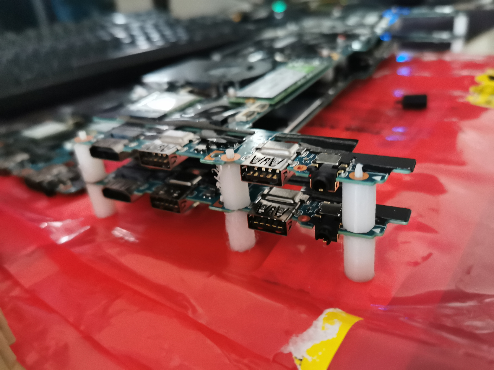
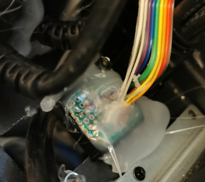
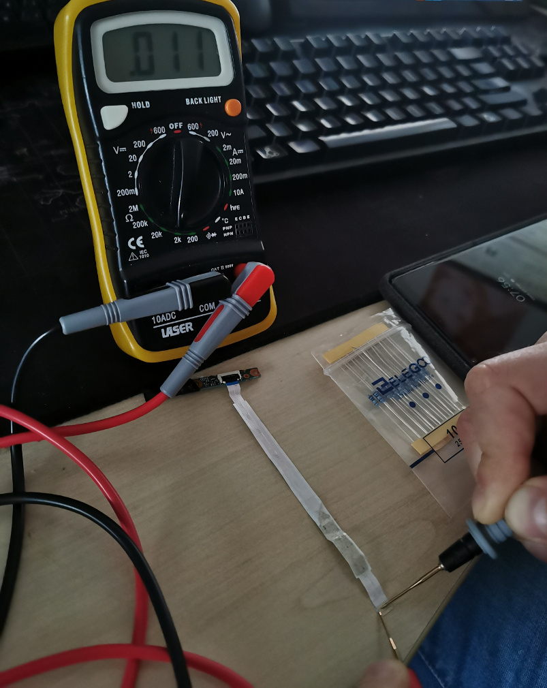
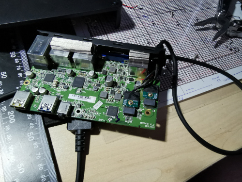
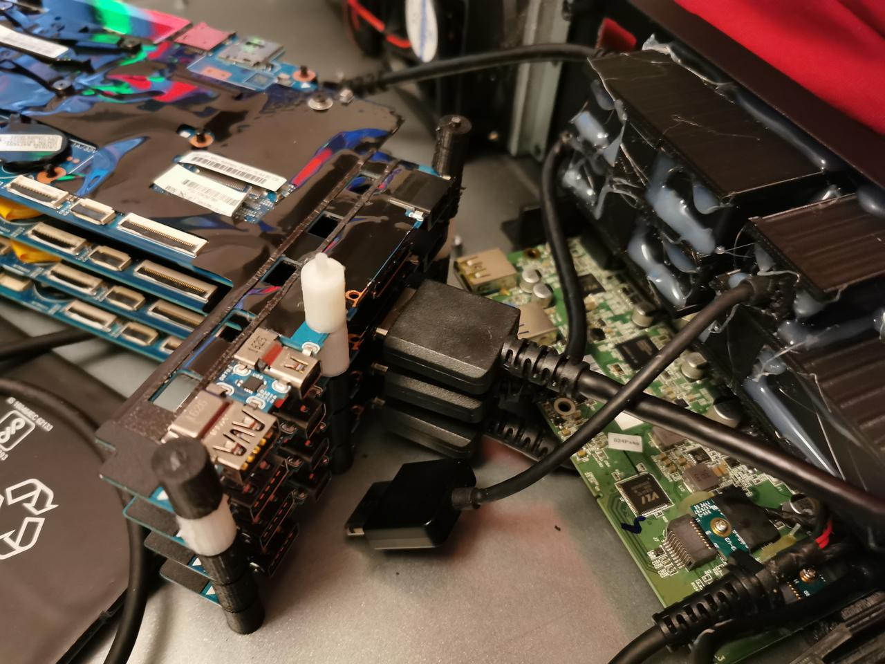
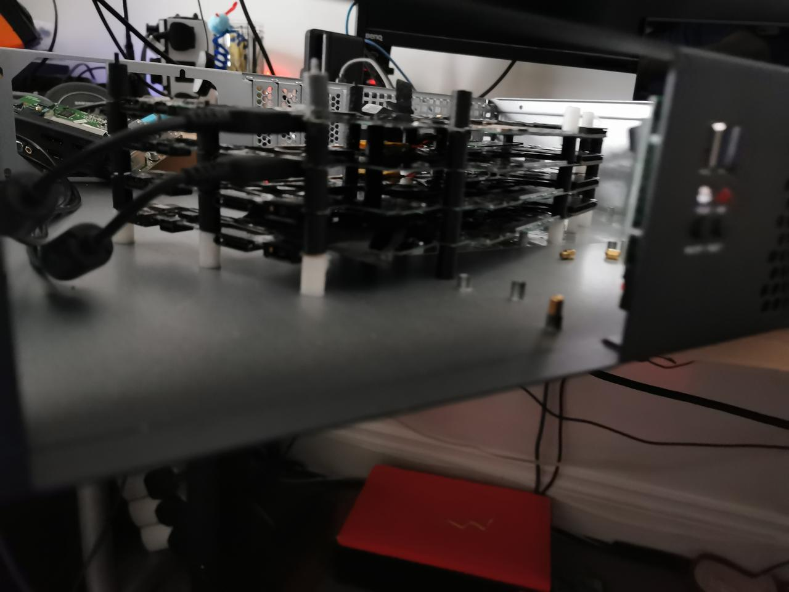
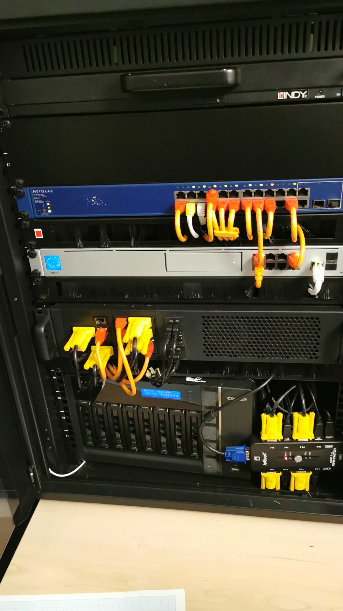
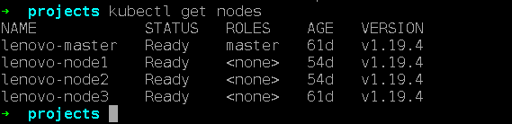
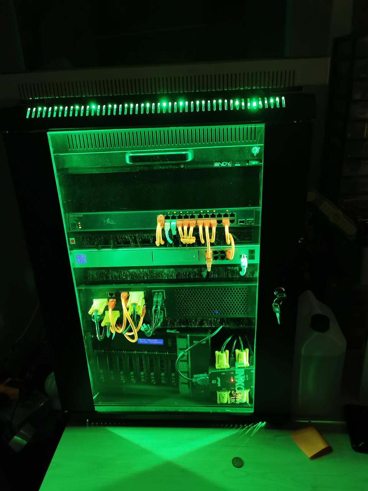
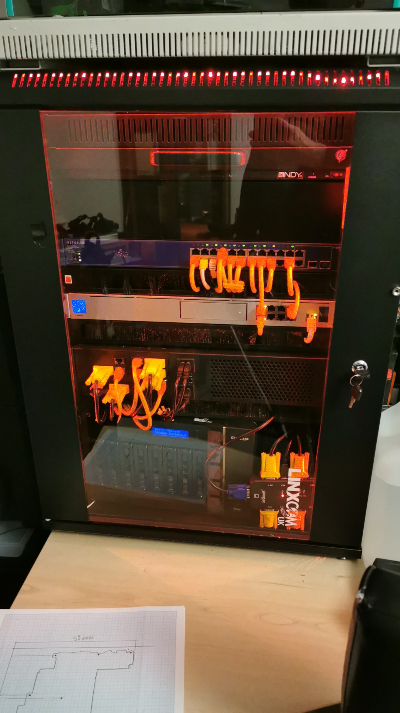

Building an Intelligent Nerf Turret with Jetson Nano: A Journey into DIY Robotics and AI
Introduction
Imagine transforming a simple toy into an intelligent machine that recognises and interacts with its environment. That's exactly what I set out to do with a Nerf turret. The journey began with a desire to create something fun and educational for my son and me, and it evolved into an exploration of open-source hardware, machine learning, and robotics.

The Beginning: Assembling the Turret
The project started with an open-source Nerf turret design
https://www.littlefrenchkev.com/bluetooth-nerf-turret
I printed all the parts using a 3D printer and got to work.
The assembly involved soldering components, integrating Arduino and servo motors for movement control, and programming the turret based on a project from the LittleFrenchKev website.
This initial phase was to explain basic electronics and programming to my son.
The fun
From Manual to Autonomous: The Leap into AI
After playing with the manually controlled turret, I realised the potential to make it autonomous and "intelligent."
The challenge was to enable the turret to recognise and target objects autonomously.
With a background in basic OpenCV and Tesseract from a decade ago, I decided to delve deeper into machine learning.
The Decision: Why Jetson Nano?
The offline Image recognitions options had to involve specialised hardware options were: Jetson Nano, Google Coral, and Intel CS.
I chose Jetson Nano for its balance of accessibility, power, and community support.
With its AI/ML Jetpack and 128-core GPU, Jetson Nano is the perfect fit for someone reentering the world of AI and machine learning.
The Upgrade: Image Recognition and Servo Control
Initially, I planned to use a Kinect camera for its depth-sensing capabilities.
However, I encountered compatibility issues with the Python version of the Jetson Nano Nvidia-customised ubuntu version.
So, I switched to a full HD Logitech camera. I asked ChatGPT for help in using the camera for person detection and received comprehensive guidance, including code snippets and suggestions to use Nvidia's pre-trained models for person detection.
https://chat.openai.com/share/1120521a-1042-4971-9e33-a852b85178f5
https://chat.openai.com/share/8ace3024-bcc9-44c1-a08a-7a5658a0e3e3
The implementation succeeded – the turret could now recognise a person using the Logitech camera.
Integrating AI with Mechanics
The next step was to translate the detected coordinates into servo movements.
I slightly modified the existing application to transform it into a web API that could accept coordinates.
This meant that the turret was not just a passive observer but could actively interact with its environment.
To add an interactive element, I created a simple HTML interface where the turret's movement followed the mouse cursor. A click would prompt the turret to "shoot."
WITH HELP OF CHATGPT!


After launching and accessing application of course I had some CORS errors
but if I didnt know whats CORS I could still just paste error to get answer from chatgpt -SCARY!


Later I wanted the turret to follow my mouse live. NOTE If we are without Architectual mind sending mouse coordinates changes through http API is crazy this would load server- but hapilly Chatgpt TELLS US ABOUT IT!!! just in case we have no infrastructure application workflow experience.)

What it didnt suggest is that for this specific usecase best would be to use websockets.

https://chat.openai.com/share/10b53b4b-d5df-41f7-9723-abde7da934e9
This feature made the turret a demonstration of AI and robotics and an engaging toy.
Conclusion: More Than Just a Toy
This project was a journey through various domains:
3D printing
electronics
programming
AI
robotics
It was a learning experience fueled by curiosity and the desire to create something unique. The Nerf turret, now equipped with AI capabilities, stands as a testament to the power of open-source projects and the accessibility of modern technology. What started as a fun project with my son became a gateway into the fascinating world of AI and robotics, demonstrating that anyone can step into the world of DIY AI projects with curiosity and the right tools.
Python antipatterns
Global variables antipattern
Global variables make code harder to reason about, test, and debug. Instead, use local variables or pass variables as function arguments.
Mutating arguments antipattern
Modifying arguments passed to a function can lead to unintended side effects and make code harder to understand. Instead, create a copy of the argument and modify the copy. In Python, mutating arguments means modifying the value of an argument passed to a function. Here's an example of a function that mutates an argument
def add_one(numbers): for i in range(len(numbers)): numbers[i] += 1 return numbers original_numbers = [1, 2, 3] new_numbers = add_one(original_numbers) print(original_numbers) # Output: [2, 3, 4] print(new_numbers) # Output: [2, 3, 4]
In this example, the add_one function takes a list of numbers as an argument. The function uses a for loop to iterate over the list and add 1 to each element. When the add_one function is called with the original_numbers list, the function modifies the list in place by adding 1 to each element.
The problem with this approach is that modifying the original list can lead to unintended side effects and make code harder to understand. To avoid this issue, it's better to create a new list inside the function and return the new list without modifying the original list. Here's an example of how to do this:
def add_one(numbers): new_numbers = [num + 1 for num in numbers] return new_numbers original_numbers = [1, 2, 3] new_numbers = add_one(original_numbers) print(original_numbers) # Output: [1, 2, 3] print(new_numbers) # Output: [2, 3, 4]
In this updated example, the add_one function creates a new list new_numbers by using a list comprehension to add 1 to each element of the numbers list. The function then returns the new list without modifying the original list. This approach is safer and makes the code easier to understand and maintain.
Using eval() or exec() antipattern
Using eval() or exec() can be dangerous and allow arbitrary code execution. Instead, use safer alternatives like ast.literal_eval() or subprocess. In Python, eval() and exec() are built-in functions that allow you to execute dynamic code. However, using them can be risky and potentially dangerous if not used properly. Here are some considerations when using eval() or exec():
Security risks: Using eval() or exec() with untrusted input can lead to security vulnerabilities. If the input contains malicious code, it can be executed with the same privileges as the program itself, which can potentially harm the system.
Debugging issues: When using eval() or exec(), it can be difficult to debug issues that arise. The code is executed at runtime, which makes it harder to pinpoint the source of errors.
Performance impact: Using eval() or exec() can have a performance impact since the code is executed at runtime. If the code is executed frequently, it can slow down the program.
Readability: Code that uses eval() or exec() can be harder to read and understand since it's not immediately clear what the code will do at runtime.
Alternative solutions: In most cases, there are better and safer alternatives to using eval() or exec(). For example, instead of using eval() to execute a string as code, you can use a function that takes arguments and returns a value.
Here's an example of how to use eval():
In this example, the eval() function is used to evaluate the string 'x + y' as a Python expression. The values of x and y are substituted into the expression, and the result of the expression is returned. However, this code can be risky if the string 'x + y' is supplied by user input since it can contain arbitrary code that can be executed with the same privileges as the program itself.
In general, it's best to avoid using eval() or exec() unless there is no other option. If you do need to use them, make sure to properly validate and sanitize input and limit the scope of execution as much as possible.
Not using with statements antipattern
Not using with statements for file I/O can lead to resource leaks and potential security vulnerabilities. Always use with statements to ensure that files are properly closed. In Python, the with statement is used to ensure that a resource is properly managed and released, even if an exception occurs while the code is executing. Not using the with statement can lead to bugs, resource leaks, and other issues. Here's an example of how to use the with statement:
with open('file.txt', 'r') as f: data = f.read() # do something with data # the file is automatically closed when the 'with' block is exited
In this example, the with statement is used to open the file 'file.txt' for reading. The code inside the with block reads the contents of the file into a variable data. When the block is exited, the file is automatically closed, even if an exception is raised while reading the file.
If you don't use the with statement to manage resources, you need to manually manage the resource yourself by opening and closing the resource explicitly. Here's an example of how to open and close a file without using the with statement:
In this example, the file is opened using the open() function and assigned to the variable f. The try block reads the contents of the file into a variable data. The finally block ensures that the file is closed after the try block is executed, even if an exception is raised.
While this approach works, using the with statement is generally considered to be cleaner and more readable. Additionally, the with statement ensures that the resource is properly managed and released, even if an exception is raised while the code is executing, making it more robust and less error-prone.
Ignoring exceptions
Ignoring exceptions can lead to hard-to-debug errors and security vulnerabilities. Always handle exceptions properly and provide meaningful error messages. Ignoring exceptions in Python can lead to bugs and unexpected behavior, and it is generally considered an antipattern. When an exception is raised, it is usually an indication that something has gone wrong and needs to be addressed. Ignoring the exception can mask the underlying problem and make it harder to diagnose and fix the issue.
Here's an example of ignoring an exception:
In this example, the try block contains code that may raise an exception. The except block catches any exception that is raised and ignores it, effectively doing nothing. This can lead to subtle bugs and unexpected behavior, as the exception may have important information about what went wrong.
Instead of ignoring exceptions, it's generally better to handle them in a meaningful way. Depending on the situation, you may want to log the exception, display an error message to the user, or take some other action to address the issue. Here's an example of handling an exception:
try: # some code that may raise an exception except SomeException as e: # handle the exception in a meaningful way log_error(e) display_error_message("An error occurred: {}".format(str(e)))
In this example, the except block catches a specific exception (SomeException) and handles it in a meaningful way. The exception is logged using a log_error() function, and an error message is displayed to the user using a display_error_message() function.
By handling exceptions in a meaningful way, you can make your code more robust and easier to maintain, as well as making it easier to diagnose and fix issues when they arise.
Overusing inheritance antipattern
Overusing inheritance can make code harder to understand and maintain. Instead, favor composition and use inheritance only when it makes sense. Inheritance is a powerful feature of object-oriented programming that allows one class to inherit the properties and methods of another class. However, overusing inheritance can lead to code that is difficult to understand and maintain. Here is an example of overusing inheritance in Python:
class Animal: def __init__(self, name, species): self.name = name self.species = species def move(self): print(f"{self.name} is moving") class Dog(Animal): def __init__(self, name): super().__init__(name, "dog") def bark(self): print("Woof!") class Cat(Animal): def __init__(self, name): super().__init__(name, "cat") def meow(self): print("Meow!") class GermanShepherd(Dog): def __init__(self, name): super().__init__(name) self.breed = "German Shepherd" class Siamese(Cat): def __init__(self, name): super().__init__(name) self.breed = "Siamese" class Mutt(Dog): def __init__(self, name): super().__init__(name) self.breed = "Mutt"
In this example, the Animal class is the base class, and it has two subclasses, Dog and Cat, which add the bark and meow methods respectively. Then, there are three more subclasses, GermanShepherd, Siamese, and Mutt, which inherit from Dog.
While this code may seem fine at first glance, it actually suffers from overuse of inheritance. The GermanShepherd, Siamese, and Mutt classes do not add any new functionality beyond what is already present in the Dog class. This means that the Dog class is being used as a sort of catch-all superclass for all dog breeds, which makes the code harder to understand and maintain.
A better approach would be to use composition instead of inheritance. For example, each dog breed could be its own class, with a Dog object inside it to provide the common functionality. This would make the code more modular and easier to reason about.
Hardcoding configuration values and paths antipattern
Hardcoding configuration values can make code harder to reuse and maintain. Instead, use environment variables or configuration files to store configuration values. Hardcoding paths to files and directories in your code can make it difficult to deploy your code to different environments. Hardcoding configuration values and paths in Python can make your code inflexible and difficult to maintain. If a configuration value or path changes, you'll have to update your code to reflect the change, which can be time-consuming and error-prone. Additionally, hardcoding values can make it harder to reuse your code in different contexts or with different requirements.
To avoid hardcoding configuration values and paths in Python, you can use configuration files or environment variables. Configuration files can be used to store key-value pairs, which can be read into your Python code at runtime. Environment variables can be used to set values that your code can access through the os.environ dictionary.
Here's an example of using a configuration file to store database connection information:
import configparser config = configparser.ConfigParser() config.read('config.ini') db_host = config['database']['host'] db_port = config['database']['port'] db_user = config['database']['user'] db_password = config['database']['password'] # use the database connection information to connect to the database
In this example, the database connection information is stored in a configuration file called config.ini. The ConfigParser class is used to read the configuration file into a dictionary, which is then used to retrieve the database connection information.
Here's an example of using environment variables to store a path:
import os data_path = os.environ.get('MY_DATA_PATH', '/default/data/path') # use the data path in your code
In this example, the os.environ dictionary is used to retrieve the value of the MY_DATA_PATH environment variable. If the variable is not set, a default value of /default/data/path is used. By using configuration files or environment variables to store configuration values and paths, you can make your code more flexible and easier to maintain. If a configuration value or path changes, you only need to update the configuration file or environment variable, rather than modifying your code. Additionally, configuration files and environment variables make it easier to reuse your code in different contexts or with different requirements.
Duplicated code antipattern
Duplicated code, also known as "code smells," is a common problem in software development that occurs when the same or similar code appears in multiple places within a codebase. Duplicated code can make the codebase more difficult to maintain, as changes may need to be made in multiple places. Here is an example of duplicated code in Python:
def calculate_area_of_circle(radius): pi = 3.14159265359 area = pi * (radius ** 2) return area def calculate_area_of_rectangle(length, width): area = length * width return area def calculate_area_of_triangle(base, height): area = 0.5 * base * height return area def calculate_circumference_of_circle(radius): pi = 3.14159265359 circumference = 2 * pi * radius return circumference def calculate_perimeter_of_rectangle(length, width): perimeter = 2 * (length + width) return perimeter def calculate_perimeter_of_triangle(side1, side2, side3): perimeter = side1 + side2 + side3 return perimeter
In this example, the code to calculate the area and perimeter/circumference of different shapes is duplicated. This can be refactored to remove the duplication by creating a Shape class with methods for calculating area and perimeter/circumference:
class Shape: def __init__(self): self.pi = 3.14159265359 def calculate_area_of_circle(self, radius): area = self.pi * (radius ** 2) return area def calculate_area_of_rectangle(self, length, width): area = length * width return area def calculate_area_of_triangle(self, base, height): area = 0.5 * base * height return area def calculate_circumference_of_circle(self, radius): circumference = 2 * self.pi * radius return circumference def calculate_perimeter_of_rectangle(self, length, width): perimeter = 2 * (length + width) return perimeter def calculate_perimeter_of_triangle(self, side1, side2, side3): perimeter = side1 + side2 + side3 return perimeter
This refactored code consolidates the duplicate code into a single class, which can be used to calculate the area and perimeter/circumference of various shapes. This makes the code more modular, easier to maintain, and reduces the likelihood of introducing errors when updating or modifying the code.
Not using functions classes or exceptions antipattern
Functions are a powerful tool that can help you to organize your code and make it more readable and maintainable. Not using functions can make your code more difficult to understand and to debug. Classes are a powerful tool that can help you to create reusable objects. Not using classes can make your code more difficult to understand and to maintain. Exceptions are a powerful tool that can help you to handle errors gracefully. Not using exceptions can make your code more difficult to use and to debug.
Using print for debugging antipattern
Using print statements for debugging can make it harder to debug and maintain code. Instead, use a debugger like pdb or ipdb to step through code and inspect variables.
Not using type annotations antipattern
Python 3 introduced type annotations, which can help catch bugs at compile-time and make code more self-documenting. Not using type annotations can lead to code that is harder to understand and maintain. Not using type annotations in Python can make your code harder to read, understand, and maintain. Type annotations allow you to specify the types of function arguments and return values, which can help catch bugs early, improve code clarity, and make it easier for others to use and understand your code.
Here's an example of a function with type annotations:
In this example, the add_numbers function takes two arguments, x and y, both of which are expected to be integers. The function returns an integer as well. By using type annotations, you can make it clear to anyone reading your code what types of arguments the function expects and what type of value it returns.
Type annotations can also be used for class attributes and instance variables. Here's an example:
class Person: name: str age: int def __init__(self, name: str, age: int): self.name = name self.age = age
In this example, the Person class has two attributes, name and age, both of which are expected to be of specific types. By using type annotations for class attributes and instance variables, you can make it clear to anyone using your class what types of values they should provide.
Type annotations can be especially useful in larger codebases or when working on a team, as they can help catch type-related bugs early and make it easier for team members to understand each other's code.
To use type annotations in Python, you'll need to use Python 3.5 or later. Type annotations are not enforced by the Python interpreter, but you can use tools like mypy to check your code for type-related errors at runtime.
Not using f-strings antipattern
Python 3.6 introduced f-strings, which provide an easy and concise way to format strings. Not using f-strings can make code harder to read and maintain.
Not using f-strings in Python can make your code less readable and harder to maintain. f-strings are a powerful feature introduced in Python 3.6 that allow you to easily format strings with variables or expressions.
Here's an example of a string formatting without f-strings:
In this example, we're using the % operator to format the string with the variables name and age. While this method works, it can be confusing and error-prone, especially with complex formatting.
Here's the same example using f-strings:
In this example, we're using f-strings to format the string with the variables name and age. F-strings allow us to embed expressions inside curly braces {} within a string, making the code more concise and easier to read.
F-strings also allow for complex expressions, making them more versatile than other string formatting methods. Here's an example:
In this example, we're using an f-string to format the string with the variables num1 and num2, as well as an expression to calculate their sum.
In summary, using f-strings in Python can make your code more readable, concise, and easier to maintain. F-strings are a powerful feature that allows you to format strings with variables and expressions in a more intuitive and error-free way.
Not using enumerate antipattern
Not using enumerate to loop over a sequence and get both the index and value can make code harder to read and maintain. Instead, use enumerate to loop over a sequence and get both the index and value.
Using enumerate in Python can make your code more readable and easier to maintain. enumerate is a built-in Python function that allows you to loop over an iterable and keep track of the index of the current element.
Here's an example of using enumerate to loop over a list and keep track of the index:
fruits = ['apple', 'banana', 'orange'] for index, fruit in enumerate(fruits): print(f'Fruit {index}: {fruit}')
In this example, we're using enumerate to loop over the fruits list and keep track of the index of each fruit. The enumerate function returns a tuple with the index and the value of each element, which we're unpacking into the variables index and fruit. We then print a formatted string that includes the index and the value of each element.
Using enumerate can make your code more readable and easier to understand, especially when you need to loop over an iterable and keep track of the index. Without enumerate, you would need to manually create a counter variable and increment it in each iteration of the loop, which can be error-prone and make the code harder to read.
Here's an example of achieving the same result as the previous example without using enumerate:
daa
fruits = ['apple', 'banana', 'orange'] index = 0
- for fruit in fruits:
print(f'Fruit {index}: {fruit}') index += 1
In this example, we're manually creating a counter variable index and incrementing it in each iteration of the loop. The resulting output is the same as the previous example, but the code is longer and harder to read.
In summary, using enumerate in Python can make your code more readable and easier to maintain, especially when you need to loop over an iterable and keep track of the index. Using enumerate can also help you avoid errors and make your code more concise.
Not using context managers antipattern
Not using context managers can lead to resource leaks and potential security vulnerabilities. Always use context managers to ensure that resources are properly closed.
Not using the else clause with for and while antipattern
In Python, you can use the else clause with a for or while loop to specify a block of code that should be executed if the loop completes normally without encountering a break statement. This can be a powerful tool for creating more robust and reliable code.
Here's an example of using the else clause with a for loop:
In this example, we're using a for loop to print the values 0 through 4. After the loop completes, we're using the else clause to print a message indicating that the loop completed normally. If we had used a break statement inside the loop to exit early, the else clause would not be executed.
Here's an example of using the else clause with a while loop:
In this example, we're using a while loop to print the values 0 through 4. After the loop completes, we're using the else clause to print a message indicating that the loop completed normally. Again, if we had used a break statement inside the loop to exit early, the else clause would not be executed.
Using the else clause with a for or while loop can make your code more robust and reliable, especially when you need to ensure that the loop completes normally without encountering errors or unexpected conditions. By providing a block of code to be executed only if the loop completes normally, you can create more robust and maintainable code.
Not using the else clause with for and while can make code harder to read and maintain. Instead, use the else clause with for and while to execute code when the loop completes normally.
Using list as a default argument value antipattern
Using list as a default argument value can lead to unexpected behavior when the list is modified. Instead, use None as the default argument value and create a new list inside the function if needed. In Python, you can use a list as a default argument value in a function. While this can be useful in some cases, it can also lead to unexpected behavior if you're not careful.
Here's an example of using a list as a default argument value:
In this example, we have a function add_item that takes an item argument and an optional lst argument, which defaults to an empty list. The function appends the item to the lst and returns the updated list. We then call the function twice, once with the argument 1 and once with the argument 2.
The output of this code is:
This behavior may be surprising if you're not expecting it. The reason for this is that Python only evaluates the default argument value once, when the function is defined. In this case, the default value for lst is an empty list, which is created once when the function is defined. Each time the function is called without a value for lst, the same list object is used and modified by the function.
To avoid this issue, you can use None as the default value for the argument and create a new list inside the function if the argument is None. Here's an example of how to do this:
def add_item(item, lst=None): if lst is None: lst = [] lst.append(item) return lst print(add_item(1)) print(add_item(2))
In this example, we're checking if lst is None inside the function and creating a new list if it is. This ensures that a new list is created each time the function is called without a value for lst.
In summary, using a list as a default argument value in Python can lead to unexpected behavior if you're not careful. To avoid this, you can use None as the default value and create a new list inside the function if the argument is None. This ensures that a new list is created each time the function is called without a value for the argument.
Python best practicies
Follow the PEP 8
PEP 8 is the official style guide for Python code. It provides guidelines for writing readable and maintainable code. Following this guide can make your code more consistent and easier to read for other developers.
Read changelog and new features when new version is released
It's good to know what was changed in new python releases.For instance very useful f strings which were introduced in 3.6
Use descriptive variable names
Your variable names should be descriptive and reflect the purpose of the variable. This can make your code easier to understand and maintain. In Python, using descriptive variable names is an important aspect of writing clean and readable code. Descriptive names can make your code more understandable, easier to read, and easier to maintain. Here are some guidelines for using descriptive variable names in your Python code:
Use meaningful and descriptive names: Variable names should reflect the purpose and use of the variable in your code. Avoid using single-letter names or generic names like temp or data. Instead, use names that describe the value or purpose of the variable, such as num_items or customer_name.
Use consistent naming conventions: Use a consistent naming convention throughout your code. This can make your code easier to read and understand. For example, you can use camel case for variable names (firstName) or underscores for function and variable names (first_name).
Avoid using reserved keywords: Avoid using reserved keywords as variable names. This can lead to syntax errors and make your code harder to read. You can find a list of reserved keywords in Python in the official documentation.
Use plural names for collections: If a variable represents a collection of values, use a plural name to indicate that it is a collection. For example, use users instead of user for a list of users.
Use descriptive names for function arguments: Use descriptive names for function arguments to make it clear what values the function expects. For example, use file_path instead of path for a function that takes a file path as an argument.
Here's an example of using descriptive variable names in a Python function:
def calculate_average(numbers): total = sum(numbers) count = len(numbers) average = total / count return average
In this example, we're using descriptive names for the variables in the function. numbers represents a collection of numbers, total represents the sum of the numbers, count represents the number of numbers in the collection, and average represents the average of the numbers.
Using descriptive variable names can make your Python code more readable and understandable. By following these guidelines, you can write code that is easier to read, easier to maintain, and less error-prone.
Write modular and reusable code
Divide your code into small, reusable functions and modules. This can make your code more maintainable and easier to test. Modular and reusable code is an important aspect of software development, as it allows for efficient and maintainable code. In Python, there are several ways to achieve this.
Functions: Functions are a way to encapsulate a set of instructions that can be reused throughout the code. They can take arguments and return values, making them versatile and adaptable to different use cases.
Example:
Classes: Classes allow for the creation of objects that can be reused throughout the code. They encapsulate data and functionality, providing a blueprint for creating multiple instances of the same object.
Example:
class Rectangle: def __init__(self, width, height): self.width = width self.height = height def area(self): return self.width * self.height rect1 = Rectangle(2, 3) rect2 = Rectangle(4, 5) print(rect1.area()) # output: 6 print(rect2.area()) # output: 20
Modules: Modules are files that contain Python code and can be imported into other files. They allow for the reuse of code across multiple projects and can be organized into packages for better organization.
Example:
# my_module.py def greeting(name): print(f"Hello, {name}!") # main.py import my_module my_module.greeting("Alice") # output: Hello, Alice!
Libraries: Python has a large number of libraries that can be used to accomplish common tasks, such as data analysis, web development, and machine learning. These libraries often provide modular and reusable code that can be incorporated into your own projects.
Example:
# Using the NumPy library to perform a vector addition import numpy as np vector1 = np.array([1, 2, 3]) vector2 = np.array([4, 5, 6]) result = vector1 + vector2 print(result) # output: [5 7 9]
By using functions, classes, modules, and libraries, you can create modular and reusable code in Python that can be easily maintained and adapted to different use cases.
Handle errors and exceptions
Always handle errors and exceptions in your code. This can prevent your code from crashing and provide better error messages for debugging. Properly handling exceptions is an important part of writing robust and reliable Python code. Here are some tips for handling exceptions in Python:
Use try-except blocks: When you have code that can potentially raise an exception, you should wrap it in a try-except block. This allows you to catch the exception and handle it gracefully.
Example:
try: x = int(input("Enter a number: ")) y = int(input("Enter another number: ")) result = x / y print(result) except ZeroDivisionError: print("You can't divide by zero!") except ValueError: print("Invalid input. Please enter a number.")
Be specific with exceptions: Catching a broad exception like Exception can hide bugs and make it difficult to understand what went wrong. It's better to catch specific exceptions that are likely to occur in your code.
Example:
try: f = open("myfile.txt") lines = f.readlines() f.close() except FileNotFoundError: print("File not found!")
Use finally blocks: If you need to perform some cleanup code, such as closing a file or releasing a resource, use a finally block. This code will always be executed, whether an exception is raised or not.
Example:
try: f = open("myfile.txt") lines = f.readlines() except FileNotFoundError: print("File not found!") finally: f.close()
Raise exceptions when appropriate: If you encounter a situation where the code cannot proceed because of some condition, raise an exception. This makes it clear what went wrong and allows the calling code to handle the error.
Example:
By following these tips, you can write Python code that handles exceptions properly, making your code more robust and reliable.
Use virtual environments or docker containers
Use virtual environments to isolate your project dependencies. This can prevent conflicts between different versions of packages and ensure that your code runs consistently across different environments. Python virtual environments and Docker are both tools that allow you to manage and isolate dependencies and configurations for your Python projects, but they serve different purposes and have different use cases.
Python virtual environments are used to create isolated environments with specific versions of Python and installed packages, independent of the system's global Python installation. This is useful when you have multiple Python projects with different dependencies, or when you need to test code on different versions of Python.
A virtual environment can be created using the venv module or other third-party tools like virtualenv. Once created, you can activate the environment to use the isolated Python interpreter and installed packages.
Example:
Docker, on the other hand, is a tool for creating and running containerized applications. A Docker container is a lightweight, portable, and self-contained environment that includes everything needed to run an application, including the operating system, runtime, libraries, and dependencies.
Docker containers are useful when you need to ensure that your application runs consistently across different environments, or when you need to deploy your application to different servers or cloud platforms.
To create a Docker container for a Python application, you would typically create a Dockerfile that specifies the dependencies and configurations for your application, and then build and run the container using the Docker CLI.
Example:
#Dockerfile FROM python:3.9-alpine WORKDIR /app COPY requirements.txt . RUN pip install --no-cache-dir -r requirements.txt COPY . . CMD ["python", "app.py"] #bash $ docker build -t myapp . $ docker run myapp
In summary, Python virtual environments and Docker are both useful tools for managing dependencies and configurations for your Python projects, but they serve different purposes and have different use cases. Virtual environments are useful for managing Python dependencies locally, while Docker is useful for creating portable and consistent environments for your applications.
Document your code
Document your code using comments, docstrings, and README files. This can make your code more understandable and easier to use for other developers. Python docstrings and README files are two ways to document your code and provide information to users and other developers about how to use and contribute to your code.
Docstrings are strings that are placed at the beginning of a function, module, or class definition to provide documentation about its purpose, arguments, and behavior. They can be accessed using the __doc__ attribute and can be formatted using various conventions such as Google, NumPy, and reStructuredText.
Here's an example of a simple docstring using the Google convention:
def greet(name: str) -> str: """Return a greeting message for the given name. Args: name: A string representing the name of the person. Returns: A string representing the greeting message. """ return f"Hello, {name}!"
README files, on the other hand, are documents that provide an overview of your project, its purpose, installation instructions, usage, and other important information. They are typically written in plain text or Markdown format and placed in the root directory of your project.
Here's an example of a simple README file:
# My Project My Project is a Python package that provides useful tools for data analysis. ## Installation To install My Project, run the following command: pip install myproject
## Usage
Here's an example of how to use My Project:
By using both docstrings and README files, you can provide comprehensive documentation for your code, making it easier for others to understand and use your code, and encourage contributions and collaborations. Write unit tests ---------------- Write unit tests for your code to ensure that it works as intended. This can catch bugs early and prevent regressions when you make changes to your code.
Use version control
Use version control, such as Git, to manage your code and collaborate with other developers. This can make it easier to track changes and revert to previous versions if necessary. Gitflow is a branching model for Git that provides a structured workflow for managing branching and merging in software development projects. It was first introduced by Vincent Driessen in 2010 and has since become a popular model for managing Git repositories.
Gitflow defines a specific branch structure and set of rules for creating, merging, and managing branches. The main branches in Gitflow are:
master branch: The master branch contains the production-ready code, and should only be updated when new features are fully tested and ready to be released.
develop branch: The develop branch is used for integrating new features and bug fixes into the main codebase. All new development should happen on this branch.
In addition to these main branches, Gitflow defines several supporting branches, including:
Feature branches: Feature branches are used for developing new features or making changes to the codebase. They are created from the develop branch and are merged back into develop when the feature is complete.
Release branches: Release branches are used for preparing a new release of the code. They are created from the develop branch and are merged into both master and develop when the release is ready.
Hotfix branches: Hotfix branches are used for fixing critical bugs in the code. They are created from the master branch and are merged back into both master and develop when the hotfix is complete.
By using Gitflow, development teams can better organize their code, collaborate more effectively, and manage their projects more efficiently. It provides a clear structure for managing branches and releases, and ensures that changes to the codebase are properly tested and integrated before they are released to production.
Avoid magic numbers and strings
Avoid using magic numbers and strings in your code. Instead, define constants or variables to represent these values. This can make your code more readable and maintainable. In Python, "magic numbers" and "magic strings" are hard-coded values that appear in your code without any explanation of what they represent. These values are problematic because they can make your code harder to understand, maintain, and modify.
To avoid using magic numbers and strings in your Python code, you can define constants or enums instead. Constants are variables that hold a fixed value, while enums are special classes that allow you to define a set of named values.
Here's an example of using constants instead of magic numbers in Python:
# Bad: using magic numbers def calculate_discount(price): if price > 100: return price * 0.9 else: return price * 0.95 # Good: using constants DISCOUNT_THRESHOLD = 100 DISCOUNT_RATE_HIGH = 0.9 DISCOUNT_RATE_LOW = 0.95 def calculate_discount(price): if price > DISCOUNT_THRESHOLD: return price * DISCOUNT_RATE_HIGH else: return price * DISCOUNT_RATE_LOW
Similarly, you can use enums to define a set of named values, which can make your code more readable and maintainable. Here's an example of using enums in Python:
from enum import Enum # Bad: using magic strings def get_status_code(status): if status == "success": return 200 elif status == "error": return 500 else: return 400 # Good: using enums class StatusCode(Enum): SUCCESS = 200 ERROR = 500 BAD_REQUEST = 400 def get_status_code(status): if status == StatusCode.SUCCESS.name: return StatusCode.SUCCESS.value elif status == StatusCode.ERROR.name: return StatusCode.ERROR.value else: return StatusCode.BAD_REQUEST.value
By using constants or enums instead of hard-coded values in your code, you can make it easier to read, understand, and modify, which can ultimately save you time and effort in the long run.
Use list and dict comprehensions
Use list comprehensions instead of for loops to create lists. This can make your code more concise and readable. In addition to list comprehensions, Python also supports dict comprehensions, which allow you to create new dictionaries from existing iterables using a similar syntax.
List Comprehensions
List comprehensions provide a concise way to create new lists from existing iterables. They consist of an iterable, a variable representing each element of the iterable, and an expression to manipulate the variable. Here are some examples of list comprehensions:
# Create a list of squares of the first ten integers squares = [x ** 2 for x in range(1, 11)] # Create a list of only the even numbers from a given list numbers = [1, 2, 3, 4, 5, 6, 7, 8, 9, 10] even_numbers = [x for x in numbers if x % 2 == 0] # Create a list of words longer than three characters from a string sentence = "The quick brown fox jumps over the lazy dog" words = sentence.split() long_words = [word for word in words if len(word) > 3]
Dict Comprehensions
Dict comprehensions work similarly to list comprehensions, but instead of creating a list, they create a new dictionary. They consist of an iterable, a variable representing each element of the iterable, and expressions to create the keys and values of the new dictionary. Here are some examples of dict comprehensions:
# Create a dictionary of squares of the first ten integers squares_dict = {x: x ** 2 for x in range(1, 11)} # Create a dictionary from two lists keys = ['a', 'b', 'c'] values = [1, 2, 3] dict_from_lists = {keys[i]: values[i] for i in range(len(keys))} # Create a dictionary from a list of tuples tuple_list = [('a', 1), ('b', 2), ('c', 3)] dict_from_tuples = {key: value for key, value in tuple_list}
List and dict comprehensions are powerful tools that can help you write more expressive and readable code in Python. They can simplify complex operations and make your code more efficient and concise.
Use type annotations
Python3 introduced support for type annotations, which can help improve the readability and maintainability of your code. By specifying the expected types of function arguments and return values, you can catch errors earlier in the development process. Python 3 introduced type annotations, which allow you to declare the expected type of function arguments and return values. Type annotations can help catch errors at compile time, make your code more readable, and improve code completion in development environments.
Type annotations can be added to functions, variables, and class members. Here are some examples of using type annotations in Python 3:
def add_numbers(x: int, y: int) -> int: return x + y result = add_numbers(1, 2) # result is inferred to be int # Type annotation for a variable name: str = "John" # Type annotations for class members class Person: def __init__(self, name: str, age: int) -> None: self.name = name self.age = age
In the above example, add_numbers function takes two arguments of type int and returns an int. The name variable is annotated as a str, and the Person class has name and age members annotated as str and int respectively.
Type annotations are not enforced by the Python interpreter at runtime, but they can be checked using external tools like [mypy](http://mypy-lang.org/). Mypy is a static type checker that can be used to verify that your code follows the type annotations you've provided.
Here's an example of using mypy to check the type annotations of a file named example.py:
If there are any type errors, mypy will report them and provide suggestions for how to fix them.
Type annotations are a powerful feature that can help make your Python code more robust and easier to maintain.
Use f-strings for string formatting
Python3 introduced f-strings, which provide a concise and readable way to format strings. Instead of using string concatenation or the old % operator, use f-strings to embed variables and expressions directly in your strings. In Python 3.6 and later, f-strings provide a concise and efficient way to format strings. F-strings are an improvement over older methods like %-formatting and str.format(), providing a more readable and less error-prone way to format strings.
F-strings allow you to include Python expressions inside string literals, using curly braces {} to enclose the expressions. The expressions are evaluated at runtime, and their results are inserted into the string. Here are some examples:
name = "John" age = 30 # Using f-strings to format a string message = f"My name is {name} and I'm {age} years old." print(message) # My name is John and I'm 30 years old. # Using f-strings to perform calculations result = f"{2 + 2}" print(result) # 4 # Using f-strings to call functions def double(x): return x * 2 result = f"{double(10)}" print(result) # 20
In the above example, name and age are inserted into the string using f-strings, and expressions like 2 + 2 and double(10) are evaluated at runtime and their results are inserted into the string.
F-strings can also be used to format numbers, dates, and other values in a variety of ways. Here are some examples:
# Formatting numbers with f-strings number = 1234.5678 formatted = f"{number:.2f}" print(formatted) # 1234.57 # Formatting dates with f-strings from datetime import datetime today = datetime.today() formatted = f"{today:%B %d, %Y}" print(formatted) # May 08, 2023 # Formatting binary data with f-strings data = b"\x00\x01\x02\x03" formatted = f"{data.hex()}" print(formatted) # 00010203
In summary, f-strings provide a powerful and flexible way to format strings in Python 3. They make it easy to include Python expressions inside string literals, and offer a variety of formatting options for numbers, dates, and other values.
Use context managers
Python3 introduced the with statement, which makes it easy to use context managers to manage resources like files, sockets, and database connections. Using context managers can help ensure that resources are properly closed and released, even if an error occurs. Context managers are a powerful feature in Python 3 that allow you to manage resources like files, network connections, and database connections in a clean and efficient way. Context managers ensure that resources are properly acquired and released, even in the face of errors and exceptions.
The with statement is used to create a context manager. When you use the with statement, Python will automatically call the __enter__() method of the context manager at the beginning of the block, and the __exit__() method at the end of the block.
Here's an example of using a context manager to work with a file:
In the above example, the open() function returns a context manager that represents the file. The with statement creates a new block of code that uses the file. The file variable contains a reference to the file, and can be used to read or write data to the file. When the block of code is finished, Python automatically calls the file.__exit__() method to close the file.
Context managers can also be created using the contextlib module. The contextlib module provides a number of helper functions for creating context managers.
Here's an example of using the contextlib module to create a context manager:
from contextlib import contextmanager @contextmanager def timer(): start_time = time.time() yield end_time = time.time() print(f"Elapsed time: {end_time - start_time} seconds") with timer(): # Code to be timed goes here time.sleep(1)
In the above example, the @contextmanager decorator is used to define a function that returns a context manager. The yield statement is used to create the context block. In this case, the timer() context manager is used to time how long it takes for the code inside the with block to execute.
Context managers are a powerful feature in Python 3 that allow you to manage resources in a clean and efficient way. By using context managers, you can ensure that resources are properly acquired and released, even in the face of errors and exceptions.
Use context decorators
Decorators are a powerful feature in Python that allow you to modify the behavior of functions and classes without changing their source code. Decorators are functions that take another function as an argument, and return a new function that wraps the original function.
Here's a simple example of a decorator:
def my_decorator(func): def wrapper(): print("Before function is called") func() print("After function is called") return wrapper @my_decorator def my_function(): print("Inside my_function") my_function()
In the above example, my_decorator() is a decorator function that takes my_function() as an argument. my_decorator() defines a new function wrapper() that adds some extra functionality before and after calling my_function(). The @my_decorator syntax is used to apply the my_decorator() decorator to the my_function() function. When my_function() is called, it is actually calling the wrapper() function that was returned by my_decorator().
Decorators can be used for a variety of purposes, including logging, profiling, memoization, input validation, and more. Decorators can also be chained together to apply multiple decorators to a function or class.
Here's an example of a decorator that logs the time it takes for a function to execute:
import time def time_it(func): def wrapper(*args, **kwargs): start_time = time.time() result = func(*args, **kwargs) end_time = time.time() print(f"Function {func.__name__} took {end_time - start_time} seconds to execute") return result return wrapper @time_it def my_function(): # code to be timed goes here time.sleep(1) my_function()
In the above example, the time_it() decorator takes a function as an argument, and returns a new function that times how long it takes for the original function to execute. The @time_it syntax is used to apply the time_it() decorator to the my_function() function. When my_function() is called, it will print a message indicating how long it took to execute.
Use pathlib for file and directory operations
Python3 introduced the pathlib module, which provides a more object-oriented and platform-independent way to work with files and directories. Instead of using the old os.path module, use pathlib to make your code more readable and maintainable. pathlib is a module in Python's standard library that provides an object-oriented way of working with file paths and directories. It offers a more intuitive way to handle paths and filenames than using raw string operations, and it works seamlessly across different operating systems.
Here are some examples of using pathlib for file and directory operations:
Creating a new directory:
This will create a new directory called my_folder in the current working directory.
Checking if a file exists:
This code checks if a file called myfile.txt exists in the current working directory.
Listing all files in a directory:
This code lists all files and directories in the my_folder directory.
Reading the contents of a file:
This code reads the contents of a file called myfile.txt into a string variable.
Writing to a file:
This code writes the string 'Hello, world!' to a file called myfile.txt.
By using pathlib instead of raw string operations, you can write more concise and readable code for file and directory operations. Additionally, pathlib works seamlessly across different operating systems, making your code more portable and robust. Use enumerate instead of len() ------------------------------ When you need to iterate over a sequence and also need access to the index of each element, use enumerate instead of range(len()). This can make your code more concise and readable. In Python, it's often more efficient and readable to use the enumerate() function instead of the len() function to iterate over a sequence while keeping track of its index. The enumerate() function returns an iterator that generates pairs of the form (index, value) for each element in the sequence.
Here's an example of using enumerate() to iterate over a list:
fruits = ['apple', 'banana', 'orange'] # Using len() function for i in range(len(fruits)): print(i, fruits[i]) # Using enumerate() function for i, fruit in enumerate(fruits): print(i, fruit)
In the first loop, we use the len() function to get the length of the fruits list and then iterate over the indices using range(). We then use the indices to access the corresponding values in the list using the indexing operator.
In the second loop, we use the enumerate() function to iterate over the fruits list directly. The enumerate() function returns pairs of (index, value) tuples, which we can unpack into separate variables i and fruit. This way, we can iterate over the list while keeping track of its index without having to use the len() function and range().
Using enumerate() instead of len() can make your code more readable and efficient, especially when you need to access both the index and the value of each element in a sequence.
Use the __name__ variable for module-level code
When writing code that should only be executed when the module is run directly (and not imported as a library), use the __name__ variable to check if the module is being run as the main program. This can help prevent unintended side effects when the module is imported as a library.
In Python, the __name__ variable is a special variable that contains the name of the current module. This variable is often used to determine whether a module is being run as the main program or imported as a module into another program.
Here's an example of using the __name__ variable to write module-level code:
def main(): # This code will only run if the module is being run as the main program print('This is the main program') if __name__ == '__main__': main()
In this example, we define a main() function that contains code that we only want to run if the module is being run as the main program. We then use the __name__ variable to check if the module is being run as the main program. If it is, we call the main() function, which runs the module-level code.
When we import this module into another program, the __name__ variable will contain the name of the module, not '__main__'. This means that the main() function won't be called, and the module-level code won't be executed.
Using the __name__ variable to write module-level code makes your code more modular and reusable. You can import the module into other programs without worrying about the module-level code being executed unintentionally.
Use the typing module for more complex types
The typing module provides support for more complex types like Union, Tuple, and Any. Using these types can help improve the readability and maintainability of your code. In Python, the typing module provides support for more complex type annotations beyond the built-in types such as int, str, and list. Using the typing module, you can annotate variables and function parameters with more complex types such as Tuple, Dict, Union, and Optional.
Here's an example of using the typing module to annotate a function parameter with a List of int values:
In this example, we import the List type from the typing module and use it to annotate the numbers parameter of the sum_numbers() function. This tells anyone reading the code that the numbers parameter is expected to be a list of integers.
You can also use the typing module to annotate more complex types such as nested structures and function signatures. Here's an example of using the Dict type to annotate a dictionary with string keys and integer values:
from typing import Dict def get_values(data: Dict[str, int], keys: List[str]) -> List[int]: return [data[key] for key in keys]
In this example, we annotate the data parameter with a Dict type that has string keys and integer values. We also annotate the keys parameter with a List of strings. The function returns a List of integers, which is also annotated using the typing module.
Using the typing module can make your code more readable and help catch errors at compile-time rather than runtime. It also makes it easier for others to understand the expected input and output types of your functions.
Write concise and expressive code
Python3 supports a wide variety of built-in functions and syntax features that can help you write concise and expressive code. Use features like list slicing, list and dictionary comprehension, and the ternary operator to make your code more concise and readable. Writing concise and expressive code is important for making your code easier to read, understand, and maintain. Here are some tips for writing concise and expressive code in Python:
Use list and dictionary comprehensions: List and dictionary comprehensions allow you to create new lists or dictionaries in a concise and expressive way. For example, instead of using a for loop to create a list of squares, you can use a list comprehension:
Use lambda functions: Lambda functions are anonymous functions that can be defined in a single line of code. They are useful for creating short, one-time-use functions. For example, instead of defining a separate function to sort a list by the second element of each tuple, you can use a lambda function:
Use the ternary operator: The ternary operator allows you to write conditional expressions in a concise and expressive way. For example, instead of using an if-else statement to set a variable based on a condition, you can use the ternary operator:
Use context managers: Context managers allow you to manage resources and ensure that they are properly cleaned up after use. They can be used to replace try-finally blocks and other boilerplate code. For example, instead of opening and closing a file using try-finally, you can use a with statement:
Use descriptive variable names: Use variable names that clearly describe their purpose. This makes your code more readable and helps others understand what your code does. For example, instead of using single-letter variable names, use descriptive names like num_of_users or customer_orders.
By following these tips, you can write code that is concise, expressive, and easy to understand.
Use the built-in functions and modules whenever possible
This will make your code more portable and easier to maintain. Python comes with a wide variety of built-in functions and modules that can make your code more efficient and easier to read. Here are some tips for using them effectively:
Use built-in functions: Python has many built-in functions that perform common tasks such as sorting, filtering, and mapping. Instead of writing your own functions, try to use these built-in functions whenever possible. For example, instead of writing a custom function to sort a list, you can use the built-in sorted() function:
Use built-in modules: Python also comes with many built-in modules that provide useful functionality for a wide range of tasks. Instead of writing your own code to perform these tasks, try to use these built-in modules whenever possible. For example, instead of writing your own code to parse command-line arguments, you can use the built-in argparse module:
import argparse parser = argparse.ArgumentParser() parser.add_argument('--verbose', action='store_true', help='print verbose output') args = parser.parse_args()
Use built-in data types: Python provides many built-in data types such as lists, dictionaries, sets, and tuples. Instead of defining your own data structures, try to use these built-in data types whenever possible. For example, instead of defining your own class to represent a point in two-dimensional space, you can use a tuple:
By using built-in functions, modules, and data types whenever possible, you can write code that is more efficient, easier to read, and easier to maintain.
Use classes to create reusable objects.
This will make your code more organized and easier to maintain. Classes are a fundamental concept in object-oriented programming and are used to define objects that encapsulate both data and the methods (functions) that operate on that data. By creating classes, you can create reusable objects with consistent behavior and state, making your code more modular and easier to maintain.
Here are some tips for using classes effectively in Python:
Define classes for each object: Define classes that represent each object in your program, such as Person or Car. This makes your code more organized and easier to understand.
Use descriptive class names: Choose class names that describe the object, such as Person or Car. This makes your code more readable and easier to understand.
Use attributes and methods: Use attributes to store the state of the object and methods to define the behavior of the object. For example, a Person class might have attributes such as name, age, and gender, and methods such as greet() or say_hello().
Encapsulate data and behavior: Encapsulate the data and behavior of the object within the class so that other parts of the program cannot access or modify it directly.
Use inheritance and polymorphism: Use inheritance to create new classes that inherit attributes and methods from parent classes, and polymorphism to define different behaviors for the same method in different classes.
Here's an example of how you might use classes to create reusable objects in Python:
class Person: def __init__(self, name, age, gender): self.name = name self.age = age self.gender = gender def greet(self): print("Hello, my name is {} and I'm {} years old.".format(self.name, self.age)) class Employee(Person): def __init__(self, name, age, gender, job_title): super().__init__(name, age, gender) self.job_title = job_title def introduce(self): print("Hello, my name is {} and I'm a {}.".format(self.name, self.job_title)) def main(): person = Person("Alice", 25, "female") person.greet() employee = Employee("Bob", 30, "male", "software engineer") employee.introduce() if __name__ == "__main__": main()
In this example, we define two classes: Person and Employee. The Person class has attributes name, age, and gender, and a method greet() that prints a greeting. The Employee class inherits from the Person class and has an additional attribute job_title and a method introduce() that prints an introduction. By using classes to create reusable objects with consistent behavior and state, we've made our code more modular and easier to maintain.
Use a debugger to step through your code and find errors.
This will help you to debug your code more quickly and easily. Debugging is an essential part of software development, and Python provides several tools to help you debug your code. One of the most powerful debugging tools in Python is the built-in pdb module, which allows you to step through your code line by line and inspect the state of variables and objects at each step.
Here are some tips for using the pdb module effectively:
Import the pdb module: At the beginning of your script or function, import the pdb module using import pdb.
Insert breakpoints: Use the pdb.set_trace() function to insert breakpoints in your code where you want to start debugging.
Use the debugger commands: Once the debugger is running, you can use a variety of commands to step through your code, inspect variables, and modify the state of your program. Some of the most commonly used commands include:
n (next): Execute the current line and move to the next line.
s (step): Step into a function call.
c (continue): Continue execution until the next breakpoint.
p (print): Print the value of a variable.
q (quit): Quit the debugger.
Use the pdb module with an IDE: Many integrated development environments (IDEs) such as PyCharm or VS Code have built-in support for the pdb module, allowing you to use the debugger from within the IDE.
Here's an example of how you might use the pdb module to debug a simple Python script:
import pdb def factorial(n): if n == 1: return 1 else: return n * factorial(n-1) def main(): pdb.set_trace() result = factorial(5) print(result) if __name__ == "__main__": main()
In this example, we've added a call to pdb.set_trace() at the beginning of the main() function, which will start the debugger when the script is run. Once the debugger is running, you can step through the factorial() function using the n and s commands, inspect variables using the p command, and quit the debugger using the q command. By using the pdb module, you can quickly and easily debug your Python code and identify and fix errors.
IPDB ipdb is a third-party Python debugger that is built on top of the built-in pdb debugger. It provides an enhanced interactive interface and syntax highlighting.
To use ipdb, you need to install it using pip:
Once you have installed ipdb, you can add the following line of code to your Python script to set a breakpoint:
This will cause the debugger to stop execution at that point and enter into the interactive ipdb shell. From there, you can use various commands to inspect variables, step through your code, and modify the state of your program.
Here are some useful ipdb commands:
n: Execute the current line and move to the next line
s: Step into a function call
c: Continue execution until the next breakpoint is reached
p <expression>: Print the value of an expression
l: List the current source code
h: Show the help screen
ipdb is a powerful debugger that can help you identify and fix errors in your Python code. However, it is important to use it judiciously and not rely on it too heavily, as it can be time-consuming and can slow down the execution of your program.
PUDB pudb is a third-party module that provides a more user-friendly and visually appealing interface for debugging Python code. It is similar to the built-in pdb module but offers additional features such as a graphical user interface, syntax highlighting, and code introspection.
Here are some tips for using pudb to debug your Python code:
Install pudb: You can install pudb using pip: pip install pudb.
Import and set a breakpoint: Import pudb at the beginning of your script or function and set a breakpoint using the pudb.set_trace() function.
Use the graphical interface: Once the breakpoint is hit, pudb will open a graphical interface that allows you to step through your code, inspect variables, and modify the state of your program. You can use the arrow keys to move between lines of code, press Enter to execute a line of code, and use the p command to print the value of a variable.
Use the sidebar: The pudb interface also includes a sidebar that displays information about the current line of code, the call stack, and the variables in the current scope. You can use the arrow keys to navigate the sidebar and press Enter to expand or collapse sections.
Use the command-line interface: If you prefer, you can also use pudb in command-line mode by passing the --cli argument when you start the debugger. In this mode, pudb provides a text-based interface that you can use to step through your code and inspect variables.
Here's an example of how you might use pudb to debug a simple Python script:
import pudb def factorial(n): if n == 1: return 1 else: return n * factorial(n-1) def main(): pudb.set_trace() result = factorial(5) print(result) if __name__ == "__main__": main()
In this example, we've added a call to pudb.set_trace() at the beginning of the main() function, which will start the pudb debugger when the script is run. Once the debugger is running, you can use the graphical interface or the command-line interface to step through the factorial() function, inspect variables, and identify and fix errors in your code.
Here are some popular Python debuggers:
pdb: The Python Debugger (pdb) is a built-in debugger that comes with Python. It allows you to step through your code line by line, set breakpoints, and inspect variables.
ipdb: IPython Debugger (ipdb) is a third-party debugger that is built on top of pdb. It provides an enhanced interactive interface and syntax highlighting.
pudb: Python Ultimate Debugger (pudb) is a third-party debugger that provides a graphical user interface and syntax highlighting.
PyCharm Debugger: PyCharm is a popular integrated development environment (IDE) for Python that includes a powerful debugger with features such as variable inspection, code stepping, and conditional breakpoints.
VS Code Debugger: Visual Studio Code (VS Code) is a popular code editor that includes a powerful debugger for Python with features such as breakpoints, variable inspection, and debugging of multi-threaded applications.
PyDev Debugger: PyDev is a plugin for the Eclipse IDE that includes a debugger with features such as code stepping, breakpoints, and variable inspection.
To use a debugger, you typically need to set a breakpoint in your code, which will cause the debugger to stop execution at that point. From there, you can step through your code line by line, inspect variables, and modify the state of your program to identify and fix errors.
Kubernetes iptables changes on service creation
This is simple investigation on what happens with iptables on service creation with /and without targetport specified
I've been recently told by someone that using target port in service creates mess in iptables so I thought it will be cool challenge to check if thats really the case.
I have used simple iptables-save to get whole iptables rules at once and then added service with targetport, then cleaned iptables by deleting service and then did the same without targetport to compare what is being added to ipt.
Cluster specs:
CPU ARCH: (x86) build with kubeadm:
CNI: Calico
KubeProxy mode: iptables
standard etcd
IPtables with targetport in service
> :KUBE-SEP-KVGH6HHOFLBGG2WW - [0:0] 184a186 > :KUBE-SVC-FOI3G5ZK27IESILB - [0:0] 201a204,205 > -A KUBE-NODEPORTS -p tcp -m comment --comment "default/ngnix-service" -m tcp --dport 31224 -j KUBE-MARK-MASQ > -A KUBE-NODEPORTS -p tcp -m comment --comment "default/ngnix-service" -m tcp --dport 31224 -j KUBE-SVC-FOI3G5ZK27IESILB > -A KUBE-SEP-KVGH6HHOFLBGG2WW -s 10.1.167.92/32 -m comment --comment "default/ngnix-service" -j KUBE-MARK-MASQ > -A KUBE-SEP-KVGH6HHOFLBGG2WW -p tcp -m comment --comment "default/ngnix-service" -m tcp -j DNAT --to-destination 10.1.167.92:8000 > -A KUBE-SERVICES ! -s 192.168.0.0/16 -d 10.105.57.223/32 -p tcp -m comment --comment "default/ngnix-service cluster IP" -m tcp --dport 80 -j KUBE-MARK-MASQ > -A KUBE-SERVICES -d 10.105.57.223/32 -p tcp -m comment --comment "default/ngnix-service cluster IP" -m tcp --dport 80 -j KUBE-SVC-FOI3G5ZK27IESILB > -A KUBE-SVC-FOI3G5ZK27IESILB -m comment --comment "default/ngnix-service" -j KUBE-SEP-KVGH6HHOFLBGG2WW
As we can see in the example above the rule is to destination nat pod IP 10.1.167.92 on the port 8000 which is target port we have specified.
IPtables without targetport in service
> :KUBE-SEP-OP54BO3C6MKRBI5R - [0:0] > :KUBE-SVC-FOI3G5ZK27IESILB - [0:0] > -A KUBE-NODEPORTS -p tcp -m comment --comment "default/ngnix-service" -m tcp --dport 32681 -j KUBE-MARK-MASQ > -A KUBE-NODEPORTS -p tcp -m comment --comment "default/ngnix-service" -m tcp --dport 32681 -j KUBE-SVC-FOI3G5ZK27IESILB > -A KUBE-SEP-OP54BO3C6MKRBI5R -s 10.1.167.92/32 -m comment --comment "default/ngnix-service" -j KUBE-MARK-MASQ > -A KUBE-SEP-OP54BO3C6MKRBI5R -p tcp -m comment --comment "default/ngnix-service" -m tcp -j DNAT --to-destination 10.1.167.92:80 < -A KUBE-SERVICES ! -s 192.168.0.0/16 -d 10.96.0.1/32 -p tcp -m comment --comment "default/kubernetes:https cluster IP" -m tcp --dport 443 -j KUBE-MARK-MASQ < -A KUBE-SERVICES -d 10.96.0.1/32 -p tcp -m comment --comment "default/kubernetes:https cluster IP" -m tcp --dport 443 -j KUBE-SVC-NPX46M4PTMTKRN6Y < -A KUBE-SERVICES ! -s 192.168.0.0/16 -d 10.96.0.10/32 -p tcp -m comment --comment "kube-system/kube-dns:metrics cluster IP" -m tcp --dport 9153 -j KUBE-MARK-MASQ < -A KUBE-SERVICES -d 10.96.0.10/32 -p tcp -m comment --comment "kube-system/kube-dns:metrics cluster IP" -m tcp --dport 9153 -j KUBE-SVC-JD5MR3NA4I4DYORP > -A KUBE-SERVICES ! -s 192.168.0.0/16 -d 10.96.129.116/32 -p tcp -m comment --comment "default/ngnix-service cluster IP" -m tcp --dport 80 -j KUBE-MARK-MASQ > -A KUBE-SERVICES -d 10.96.129.116/32 -p tcp -m comment --comment "default/ngnix-service cluster IP" -m tcp --dport 80 -j KUBE-SVC-FOI3G5ZK27IESILB > -A KUBE-SERVICES ! -s 192.168.0.0/16 -d 10.96.0.1/32 -p tcp -m comment --comment "default/kubernetes:https cluster IP" -m tcp --dport 443 -j KUBE-MARK-MASQ > -A KUBE-SERVICES -d 10.96.0.1/32 -p tcp -m comment --comment "default/kubernetes:https cluster IP" -m tcp --dport 443 -j KUBE-SVC-NPX46M4PTMTKRN6Y > -A KUBE-SERVICES ! -s 192.168.0.0/16 -d 10.96.0.10/32 -p tcp -m comment --comment "kube-system/kube-dns:metrics cluster IP" -m tcp --dport 9153 -j KUBE-MARK-MASQ > -A KUBE-SERVICES -d 10.96.0.10/32 -p tcp -m comment --comment "kube-system/kube-dns:metrics cluster IP" -m tcp --dport 9153 -j KUBE-SVC-JD5MR3NA4I4DYORP > -A KUBE-SVC-FOI3G5ZK27IESILB -m comment --comment "default/ngnix-service" -j KUBE-SEP-OP54BO3C6MKRBI5R
In such simple setup I would say not providing the targetport makes even bigger mess.
Lets see something more sophisticated so deployment with 2 replicasets
With targetport:
> :PREROUTING ACCEPT [4:212] > :INPUT ACCEPT [4:212] > :OUTPUT ACCEPT [29:1740] > :POSTROUTING ACCEPT [29:1740] > :KUBE-SEP-KCPMBF3JPX5ITGQR - [0:0] > :KUBE-SEP-PPG4JXRVDYEFVT6U - [0:0] > :KUBE-SVC-JSEMNMAXFXXWPYZQ - [0:0] > -A KUBE-NODEPORTS -p tcp -m comment --comment "default/ngnix2-service" -m tcp --dport 30329 -j KUBE-MARK-MASQ > -A KUBE-NODEPORTS -p tcp -m comment --comment "default/ngnix2-service" -m tcp --dport 30329 -j KUBE-SVC-JSEMNMAXFXXWPYZQ > -A KUBE-SEP-KCPMBF3JPX5ITGQR -s 10.1.129.5/32 -m comment --comment "default/ngnix2-service" -j KUBE-MARK-MASQ > -A KUBE-SEP-KCPMBF3JPX5ITGQR -p tcp -m comment --comment "default/ngnix2-service" -m tcp -j DNAT --to-destination 10.1.129.5:8000 > -A KUBE-SEP-PPG4JXRVDYEFVT6U -s 10.1.167.83/32 -m comment --comment "default/ngnix2-service" -j KUBE-MARK-MASQ > -A KUBE-SEP-PPG4JXRVDYEFVT6U -p tcp -m comment --comment "default/ngnix2-service" -m tcp -j DNAT --to-destination 10.1.167.83:8000 > -A KUBE-SERVICES ! -s 192.168.0.0/16 -d 10.98.111.212/32 -p tcp -m comment --comment "default/ngnix2-service cluster IP" -m tcp --dport 80 -j KUBE-MARK-MASQ > -A KUBE-SERVICES -d 10.98.111.212/32 -p tcp -m comment --comment "default/ngnix2-service cluster IP" -m tcp --dport 80 -j KUBE-SVC-JSEMNMAXFXXWPYZQ > -A KUBE-SVC-JSEMNMAXFXXWPYZQ -m comment --comment "default/ngnix2-service" -m statistic --mode random --probability 0.50000000000 -j KUBE-SEP-KCPMBF3JPX5ITGQR > -A KUBE-SVC-JSEMNMAXFXXWPYZQ -m comment --comment "default/ngnix2-service" -j KUBE-SEP-PPG4JXRVDYEFVT6U
From the following we can spot that each for our label selector in the service is listed here, which absolutely makes sense how kube proxy would know where to send packets if not that.
Ok lets try with replicas without providing the port:
Without targetport:
> :PREROUTING ACCEPT [4:252] > :INPUT ACCEPT [4:252] > :OUTPUT ACCEPT [25:1500] > :POSTROUTING ACCEPT [25:1500] > :KUBE-SEP-NK6MJN7AMVFQPBDQ - [0:0] > :KUBE-SEP-ZX65TQ3QUDHUAQQM - [0:0] > :KUBE-SVC-JSEMNMAXFXXWPYZQ - [0:0] > -A KUBE-NODEPORTS -p tcp -m comment --comment "default/ngnix2-service" -m tcp --dport 31277 -j KUBE-MARK-MASQ > -A KUBE-NODEPORTS -p tcp -m comment --comment "default/ngnix2-service" -m tcp --dport 31277 -j KUBE-SVC-JSEMNMAXFXXWPYZQ > -A KUBE-SEP-NK6MJN7AMVFQPBDQ -s 10.1.129.5/32 -m comment --comment "default/ngnix2-service" -j KUBE-MARK-MASQ > -A KUBE-SEP-NK6MJN7AMVFQPBDQ -p tcp -m comment --comment "default/ngnix2-service" -m tcp -j DNAT --to-destination 10.1.129.5:80 < -A KUBE-SERVICES ! -s 192.168.0.0/16 -d 10.96.0.10/32 -p udp -m comment --comment "kube-system/kube-dns:dns cluster IP" -m udp --dport 53 -j KUBE-MARK-MASQ < -A KUBE-SERVICES -d 10.96.0.10/32 -p udp -m comment --comment "kube-system/kube-dns:dns cluster IP" -m udp --dport 53 -j KUBE-SVC-TCOU7JCQXEZGVUNU --- > -A KUBE-SEP-ZX65TQ3QUDHUAQQM -s 10.1.167.83/32 -m comment --comment "default/ngnix2-service" -j KUBE-MARK-MASQ > -A KUBE-SEP-ZX65TQ3QUDHUAQQM -p tcp -m comment --comment "default/ngnix2-service" -m tcp -j DNAT --to-destination 10.1.167.83:80 > -A KUBE-SERVICES ! -s 192.168.0.0/16 -d 10.108.13.83/32 -p tcp -m comment --comment "default/ngnix2-service cluster IP" -m tcp --dport 80 -j KUBE-MARK-MASQ > -A KUBE-SERVICES -d 10.108.13.83/32 -p tcp -m comment --comment "default/ngnix2-service cluster IP" -m tcp --dport 80 -j KUBE-SVC-JSEMNMAXFXXWPYZQ > -A KUBE-SERVICES ! -s 192.168.0.0/16 -d 10.96.0.10/32 -p udp -m comment --comment "kube-system/kube-dns:dns cluster IP" -m udp --dport 53 -j KUBE-MARK-MASQ > -A KUBE-SERVICES -d 10.96.0.10/32 -p udp -m comment --comment "kube-system/kube-dns:dns cluster IP" -m udp --dport 53 -j KUBE-SVC-TCOU7JCQXEZGVUNU > -A KUBE-SVC-JSEMNMAXFXXWPYZQ -m comment --comment "default/ngnix2-service" -m statistic --mode random --probability 0.50000000000 -j KUBE-SEP-NK6MJN7AMVFQPBDQ > -A KUBE-SVC-JSEMNMAXFXXWPYZQ -m comment --comment "default/ngnix2-service" -j KUBE-SEP-ZX65TQ3QUDHUAQQM
This needs proper investigation from me but for now what I can see by not providing target port the iptables rules are interfering with more components like kube-dns and by providing the targetport its not touching kube-dns
To be continued...
Kubernetes etcd - what's inside?
What's etcd and what part does it play in kubernetes?
ETCD is an open source distributed key-value store. In kubernetes it is a "single point of truth" as well as "single point of failure", it is the "definition of the cluster" as it holds it's configuration and status so it's best to have it replicated.
There are of course alternatives like consul , zookeeper , doozerd , but I can't tell anything about them yet as haven't tried them (there are a lot of comparisons on the web already).
I was always curious how it's structured, also it's good to know how it works from admin point of view this could help to simulate some etcd failure/corruption/snapshot and restore.
To play with your etcd (remember you can destroy your cluster so just bear in mind to make read operations only and dont play with production one unless you know what you are doing).
We can do it using etcdclient locally (described in the bottom ) or eve easier - through etcd pod.
Accessing etcd through etcd pod
kubectl get pods -n kube-system -l component=etcd NAME READY STATUS RESTARTS AGE etcd-lenovo-node1 1/1 Running 0 47d
I now know my etcd pods name is "etcd-lenovo-node1" so I can execute etcdctl on it now.
Checking etcd instances
kubectl exec -it etcd-lenovo-node1 -n kube-system -- /bin/sh -c "ETCDCTL_API=3 etcdctl \ --endpoints=https://127.0.0.1:2379 \ --cacert=/etc/kubernetes/pki/etcd/ca.crt \ --cert=/etc/kubernetes/pki/etcd/server.crt \ --key=/etc/kubernetes/pki/etcd/server.key \ member list"
For the reference we will get all keys:
kubectl exec -it etcd-lenovo-node1 -n kube-system -- /bin/sh -c "ETCDCTL_API=3 etcdctl \ --endpoints=https://127.0.0.1:2379 \ --cacert=/etc/kubernetes/pki/etcd/ca.crt \ --cert=/etc/kubernetes/pki/etcd/server.crt \ --key=/etc/kubernetes/pki/etcd/server.key \ get / --prefix --keys-only"
Output:
/calico/ipam/v2/assignment/ipv4/block/10.1.129.0-26 /calico/ipam/v2/assignment/ipv4/block/10.1.161.128-26 /calico/ipam/v2/assignment/ipv4/block/10.1.167.64-26 /calico/ipam/v2/assignment/ipv4/block/10.1.46.192-26 /calico/ipam/v2/handle/ipip-tunnel-addr-lenovo-master /calico/ipam/v2/handle/ipip-tunnel-addr-lenovo-node1 /calico/ipam/v2/handle/ipip-tunnel-addr-lenovo-node2 /calico/ipam/v2/handle/ipip-tunnel-addr-lenovo-node3 /calico/ipam/v2/handle/k8s-pod-network.066670f1f4cbac2f254078fa523c2351ff43d43f37ef279d077ca9e537363367 /calico/ipam/v2/handle/k8s-pod-network.0854af62bdae13df75426ab9f0930045e527203c6a70863a1e6ac419dde92755 /calico/ipam/v2/handle/k8s-pod-network.2ea6c7186cce92fcf37c68cba1013975f8144a36c24580133cdae1d2a5c81824 /calico/ipam/v2/handle/k8s-pod-network.7b253e73a58302b7bd365f748085eddb7a88b73770f09981e4edcf743fca103e /calico/ipam/v2/handle/k8s-pod-network.7d44b409803e0297e38af4571fda00f7f50858fcd6b51556f94ac08561f41415 /calico/ipam/v2/handle/k8s-pod-network.81ee68186cf6390521b6f7211804959de7dd61526b0fa50a62be68bdcdff3348 /calico/ipam/v2/handle/k8s-pod-network.81f75b846e0b01c2756c6de53cb5ede58dcd2f08cfc0fb82b44dbbc41cb3cd83 /calico/ipam/v2/handle/k8s-pod-network.84122c67c08645bcdc8e05024086caa16ec841018b01ed7f15bd29d837653d7f /calico/ipam/v2/handle/k8s-pod-network.c5942bdcf48ee4971952d449db73e4130aa7f57719d48159611ba1591f2aa5e8 /calico/ipam/v2/handle/k8s-pod-network.de3addbfdb7c67b750b074a04d82753a3184d963255c349ed15a63597a6e7dd6 /calico/ipam/v2/host/lenovo-master/ipv4/block/10.1.46.192-26 /calico/ipam/v2/host/lenovo-node1/ipv4/block/10.1.161.128-26 /calico/ipam/v2/host/lenovo-node2/ipv4/block/10.1.167.64-26 /calico/ipam/v2/host/lenovo-node3/ipv4/block/10.1.129.0-26 /calico/resources/v3/projectcalico.org/clusterinformations/default /calico/resources/v3/projectcalico.org/felixconfigurations/default /calico/resources/v3/projectcalico.org/felixconfigurations/node.lenovo-master /calico/resources/v3/projectcalico.org/felixconfigurations/node.lenovo-node1 /calico/resources/v3/projectcalico.org/felixconfigurations/node.lenovo-node2 /calico/resources/v3/projectcalico.org/felixconfigurations/node.lenovo-node3 /calico/resources/v3/projectcalico.org/ippools/default-ipv4-ippool /calico/resources/v3/projectcalico.org/kubecontrollersconfigurations/default /calico/resources/v3/projectcalico.org/nodes/lenovo-master /calico/resources/v3/projectcalico.org/nodes/lenovo-node1 /calico/resources/v3/projectcalico.org/nodes/lenovo-node2 /calico/resources/v3/projectcalico.org/nodes/lenovo-node3 /calico/resources/v3/projectcalico.org/profiles/kns.default /calico/resources/v3/projectcalico.org/profiles/kns.kube-node-lease /calico/resources/v3/projectcalico.org/profiles/kns.kube-public /calico/resources/v3/projectcalico.org/profiles/kns.kube-system /calico/resources/v3/projectcalico.org/profiles/kns.metallb-system /calico/resources/v3/projectcalico.org/profiles/kns.quota-mem-cpu /calico/resources/v3/projectcalico.org/profiles/ksa.default.default /calico/resources/v3/projectcalico.org/profiles/ksa.kube-node-lease.default /calico/resources/v3/projectcalico.org/profiles/ksa.kube-public.default /calico/resources/v3/projectcalico.org/profiles/ksa.kube-system.attachdetach-controller /calico/resources/v3/projectcalico.org/profiles/ksa.kube-system.bootstrap-signer /calico/resources/v3/projectcalico.org/profiles/ksa.kube-system.calico-kube-controllers /calico/resources/v3/projectcalico.org/profiles/ksa.kube-system.calico-node /calico/resources/v3/projectcalico.org/profiles/ksa.kube-system.certificate-controller /calico/resources/v3/projectcalico.org/profiles/ksa.kube-system.clusterrole-aggregation-controller /calico/resources/v3/projectcalico.org/profiles/ksa.kube-system.coredns /calico/resources/v3/projectcalico.org/profiles/ksa.kube-system.cronjob-controller /calico/resources/v3/projectcalico.org/profiles/ksa.kube-system.daemon-set-controller /calico/resources/v3/projectcalico.org/profiles/ksa.kube-system.default /calico/resources/v3/projectcalico.org/profiles/ksa.kube-system.deployment-controller /calico/resources/v3/projectcalico.org/profiles/ksa.kube-system.disruption-controller /calico/resources/v3/projectcalico.org/profiles/ksa.kube-system.endpoint-controller /calico/resources/v3/projectcalico.org/profiles/ksa.kube-system.endpointslice-controller /calico/resources/v3/projectcalico.org/profiles/ksa.kube-system.endpointslicemirroring-controller /calico/resources/v3/projectcalico.org/profiles/ksa.kube-system.expand-controller /calico/resources/v3/projectcalico.org/profiles/ksa.kube-system.generic-garbage-collector /calico/resources/v3/projectcalico.org/profiles/ksa.kube-system.horizontal-pod-autoscaler /calico/resources/v3/projectcalico.org/profiles/ksa.kube-system.job-controller /calico/resources/v3/projectcalico.org/profiles/ksa.kube-system.kube-proxy /calico/resources/v3/projectcalico.org/profiles/ksa.kube-system.metrics-server /calico/resources/v3/projectcalico.org/profiles/ksa.kube-system.namespace-controller /calico/resources/v3/projectcalico.org/profiles/ksa.kube-system.node-controller /calico/resources/v3/projectcalico.org/profiles/ksa.kube-system.persistent-volume-binder /calico/resources/v3/projectcalico.org/profiles/ksa.kube-system.pod-garbage-collector /calico/resources/v3/projectcalico.org/profiles/ksa.kube-system.pv-protection-controller /calico/resources/v3/projectcalico.org/profiles/ksa.kube-system.pvc-protection-controller /calico/resources/v3/projectcalico.org/profiles/ksa.kube-system.replicaset-controller /calico/resources/v3/projectcalico.org/profiles/ksa.kube-system.replication-controller /calico/resources/v3/projectcalico.org/profiles/ksa.kube-system.resourcequota-controller /calico/resources/v3/projectcalico.org/profiles/ksa.kube-system.root-ca-cert-publisher /calico/resources/v3/projectcalico.org/profiles/ksa.kube-system.service-account-controller /calico/resources/v3/projectcalico.org/profiles/ksa.kube-system.service-controller /calico/resources/v3/projectcalico.org/profiles/ksa.kube-system.statefulset-controller /calico/resources/v3/projectcalico.org/profiles/ksa.kube-system.token-cleaner /calico/resources/v3/projectcalico.org/profiles/ksa.kube-system.ttl-controller /calico/resources/v3/projectcalico.org/profiles/ksa.metallb-system.controller /calico/resources/v3/projectcalico.org/profiles/ksa.metallb-system.default /calico/resources/v3/projectcalico.org/profiles/ksa.metallb-system.speaker /calico/resources/v3/projectcalico.org/workloadendpoints/default/lenovo--master-k8s-nginx--hpa--6c4758554f--99h7l-eth0 /calico/resources/v3/projectcalico.org/workloadendpoints/default/lenovo--master-k8s-nginx--hpa--6c4758554f--tqrp9-eth0 /calico/resources/v3/projectcalico.org/workloadendpoints/default/lenovo--master-k8s-nginx--hpa--6c4758554f--zf4rd-eth0 /calico/resources/v3/projectcalico.org/workloadendpoints/default/lenovo--node2-k8s-ng-eth0 /calico/resources/v3/projectcalico.org/workloadendpoints/default/lenovo--node2-k8s-nginx--b4c9f744d--6fqjs-eth0 /calico/resources/v3/projectcalico.org/workloadendpoints/default/lenovo--node2-k8s-nginx--b4c9f744d--hvdsh-eth0 /calico/resources/v3/projectcalico.org/workloadendpoints/kube-system/lenovo--master-k8s-metrics--server--666b5bc478--8624s-eth0 /calico/resources/v3/projectcalico.org/workloadendpoints/kube-system/lenovo--node1-k8s-coredns--74ff55c5b--n942q-eth0 /calico/resources/v3/projectcalico.org/workloadendpoints/kube-system/lenovo--node1-k8s-coredns--74ff55c5b--vnm7t-eth0 /calico/resources/v3/projectcalico.org/workloadendpoints/metallb-system/lenovo--node3-k8s-controller--65db86ddc6--q6zvx-eth0 /registry/apiregistration.k8s.io/apiservices/v1. /registry/apiregistration.k8s.io/apiservices/v1.admissionregistration.k8s.io /registry/apiregistration.k8s.io/apiservices/v1.apiextensions.k8s.io /registry/apiregistration.k8s.io/apiservices/v1.apps /registry/apiregistration.k8s.io/apiservices/v1.authentication.k8s.io /registry/apiregistration.k8s.io/apiservices/v1.authorization.k8s.io /registry/apiregistration.k8s.io/apiservices/v1.autoscaling /registry/apiregistration.k8s.io/apiservices/v1.batch /registry/apiregistration.k8s.io/apiservices/v1.certificates.k8s.io /registry/apiregistration.k8s.io/apiservices/v1.coordination.k8s.io /registry/apiregistration.k8s.io/apiservices/v1.events.k8s.io /registry/apiregistration.k8s.io/apiservices/v1.networking.k8s.io /registry/apiregistration.k8s.io/apiservices/v1.node.k8s.io /registry/apiregistration.k8s.io/apiservices/v1.rbac.authorization.k8s.io /registry/apiregistration.k8s.io/apiservices/v1.scheduling.k8s.io /registry/apiregistration.k8s.io/apiservices/v1.storage.k8s.io /registry/apiregistration.k8s.io/apiservices/v1beta1.admissionregistration.k8s.io /registry/apiregistration.k8s.io/apiservices/v1beta1.apiextensions.k8s.io /registry/apiregistration.k8s.io/apiservices/v1beta1.authentication.k8s.io /registry/apiregistration.k8s.io/apiservices/v1beta1.authorization.k8s.io /registry/apiregistration.k8s.io/apiservices/v1beta1.batch /registry/apiregistration.k8s.io/apiservices/v1beta1.certificates.k8s.io /registry/apiregistration.k8s.io/apiservices/v1beta1.coordination.k8s.io /registry/apiregistration.k8s.io/apiservices/v1beta1.discovery.k8s.io /registry/apiregistration.k8s.io/apiservices/v1beta1.events.k8s.io /registry/apiregistration.k8s.io/apiservices/v1beta1.extensions /registry/apiregistration.k8s.io/apiservices/v1beta1.flowcontrol.apiserver.k8s.io /registry/apiregistration.k8s.io/apiservices/v1beta1.metrics.k8s.io /registry/apiregistration.k8s.io/apiservices/v1beta1.networking.k8s.io /registry/apiregistration.k8s.io/apiservices/v1beta1.node.k8s.io /registry/apiregistration.k8s.io/apiservices/v1beta1.policy /registry/apiregistration.k8s.io/apiservices/v1beta1.rbac.authorization.k8s.io /registry/apiregistration.k8s.io/apiservices/v1beta1.scheduling.k8s.io /registry/apiregistration.k8s.io/apiservices/v1beta1.storage.k8s.io /registry/apiregistration.k8s.io/apiservices/v2beta1.autoscaling /registry/apiregistration.k8s.io/apiservices/v2beta2.autoscaling /registry/clusterrolebindings/calico-kube-controllers /registry/clusterrolebindings/calico-node /registry/clusterrolebindings/cluster-admin /registry/clusterrolebindings/kubeadm:get-nodes /registry/clusterrolebindings/kubeadm:kubelet-bootstrap /registry/clusterrolebindings/kubeadm:node-autoapprove-bootstrap /registry/clusterrolebindings/kubeadm:node-autoapprove-certificate-rotation /registry/clusterrolebindings/kubeadm:node-proxier /registry/clusterrolebindings/metallb-system:controller /registry/clusterrolebindings/metallb-system:speaker /registry/clusterrolebindings/metrics-server:system:auth-delegator /registry/clusterrolebindings/system:basic-user /registry/clusterrolebindings/system:controller:attachdetach-controller /registry/clusterrolebindings/system:controller:certificate-controller /registry/clusterrolebindings/system:controller:clusterrole-aggregation-controller /registry/clusterrolebindings/system:controller:cronjob-controller /registry/clusterrolebindings/system:controller:daemon-set-controller /registry/clusterrolebindings/system:controller:deployment-controller /registry/clusterrolebindings/system:controller:disruption-controller /registry/clusterrolebindings/system:controller:endpoint-controller /registry/clusterrolebindings/system:controller:endpointslice-controller /registry/clusterrolebindings/system:controller:endpointslicemirroring-controller /registry/clusterrolebindings/system:controller:expand-controller /registry/clusterrolebindings/system:controller:generic-garbage-collector /registry/clusterrolebindings/system:controller:horizontal-pod-autoscaler /registry/clusterrolebindings/system:controller:job-controller /registry/clusterrolebindings/system:controller:namespace-controller /registry/clusterrolebindings/system:controller:node-controller /registry/clusterrolebindings/system:controller:persistent-volume-binder /registry/clusterrolebindings/system:controller:pod-garbage-collector /registry/clusterrolebindings/system:controller:pv-protection-controller /registry/clusterrolebindings/system:controller:pvc-protection-controller /registry/clusterrolebindings/system:controller:replicaset-controller /registry/clusterrolebindings/system:controller:replication-controller /registry/clusterrolebindings/system:controller:resourcequota-controller /registry/clusterrolebindings/system:controller:root-ca-cert-publisher /registry/clusterrolebindings/system:controller:route-controller /registry/clusterrolebindings/system:controller:service-account-controller /registry/clusterrolebindings/system:controller:service-controller /registry/clusterrolebindings/system:controller:statefulset-controller /registry/clusterrolebindings/system:controller:ttl-controller /registry/clusterrolebindings/system:coredns /registry/clusterrolebindings/system:discovery /registry/clusterrolebindings/system:kube-controller-manager /registry/clusterrolebindings/system:kube-dns /registry/clusterrolebindings/system:kube-scheduler /registry/clusterrolebindings/system:metrics-server /registry/clusterrolebindings/system:monitoring /registry/clusterrolebindings/system:node /registry/clusterrolebindings/system:node-proxier /registry/clusterrolebindings/system:public-info-viewer /registry/clusterrolebindings/system:service-account-issuer-discovery /registry/clusterrolebindings/system:volume-scheduler /registry/clusterroles/admin /registry/clusterroles/calico-kube-controllers /registry/clusterroles/calico-node /registry/clusterroles/cluster-admin /registry/clusterroles/edit /registry/clusterroles/kubeadm:get-nodes /registry/clusterroles/metallb-system:controller /registry/clusterroles/metallb-system:speaker /registry/clusterroles/system:aggregate-to-admin /registry/clusterroles/system:aggregate-to-edit /registry/clusterroles/system:aggregate-to-view /registry/clusterroles/system:aggregated-metrics-reader /registry/clusterroles/system:auth-delegator /registry/clusterroles/system:basic-user /registry/clusterroles/system:certificates.k8s.io:certificatesigningrequests:nodeclient /registry/clusterroles/system:certificates.k8s.io:certificatesigningrequests:selfnodeclient /registry/clusterroles/system:certificates.k8s.io:kube-apiserver-client-approver /registry/clusterroles/system:certificates.k8s.io:kube-apiserver-client-kubelet-approver /registry/clusterroles/system:certificates.k8s.io:kubelet-serving-approver /registry/clusterroles/system:certificates.k8s.io:legacy-unknown-approver /registry/clusterroles/system:controller:attachdetach-controller /registry/clusterroles/system:controller:certificate-controller /registry/clusterroles/system:controller:clusterrole-aggregation-controller /registry/clusterroles/system:controller:cronjob-controller /registry/clusterroles/system:controller:daemon-set-controller /registry/clusterroles/system:controller:deployment-controller /registry/clusterroles/system:controller:disruption-controller /registry/clusterroles/system:controller:endpoint-controller /registry/clusterroles/system:controller:endpointslice-controller /registry/clusterroles/system:controller:endpointslicemirroring-controller /registry/clusterroles/system:controller:expand-controller /registry/clusterroles/system:controller:generic-garbage-collector /registry/clusterroles/system:controller:horizontal-pod-autoscaler /registry/clusterroles/system:controller:job-controller /registry/clusterroles/system:controller:namespace-controller /registry/clusterroles/system:controller:node-controller /registry/clusterroles/system:controller:persistent-volume-binder /registry/clusterroles/system:controller:pod-garbage-collector /registry/clusterroles/system:controller:pv-protection-controller /registry/clusterroles/system:controller:pvc-protection-controller /registry/clusterroles/system:controller:replicaset-controller /registry/clusterroles/system:controller:replication-controller /registry/clusterroles/system:controller:resourcequota-controller /registry/clusterroles/system:controller:root-ca-cert-publisher /registry/clusterroles/system:controller:route-controller /registry/clusterroles/system:controller:service-account-controller /registry/clusterroles/system:controller:service-controller /registry/clusterroles/system:controller:statefulset-controller /registry/clusterroles/system:controller:ttl-controller /registry/clusterroles/system:coredns /registry/clusterroles/system:discovery /registry/clusterroles/system:heapster /registry/clusterroles/system:kube-aggregator /registry/clusterroles/system:kube-controller-manager /registry/clusterroles/system:kube-dns /registry/clusterroles/system:kube-scheduler /registry/clusterroles/system:kubelet-api-admin /registry/clusterroles/system:metrics-server /registry/clusterroles/system:monitoring /registry/clusterroles/system:node /registry/clusterroles/system:node-bootstrapper /registry/clusterroles/system:node-problem-detector /registry/clusterroles/system:node-proxier /registry/clusterroles/system:persistent-volume-provisioner /registry/clusterroles/system:public-info-viewer /registry/clusterroles/system:service-account-issuer-discovery /registry/clusterroles/system:volume-scheduler /registry/clusterroles/view /registry/configmaps/default/cfindex /registry/configmaps/default/kube-root-ca.crt /registry/configmaps/kube-node-lease/kube-root-ca.crt /registry/configmaps/kube-public/cluster-info /registry/configmaps/kube-public/kube-root-ca.crt /registry/configmaps/kube-system/calico-config /registry/configmaps/kube-system/coredns /registry/configmaps/kube-system/extension-apiserver-authentication /registry/configmaps/kube-system/kube-proxy /registry/configmaps/kube-system/kube-root-ca.crt /registry/configmaps/kube-system/kubeadm-config /registry/configmaps/kube-system/kubelet-config-1.20 /registry/configmaps/metallb-system/kube-root-ca.crt /registry/controllerrevisions/kube-system/calico-node-849b8dc6bf /registry/controllerrevisions/kube-system/kube-proxy-9978ddf98 /registry/controllerrevisions/metallb-system/speaker-55466f8f44 /registry/csinodes/lenovo-master /registry/csinodes/lenovo-node1 /registry/csinodes/lenovo-node2 /registry/csinodes/lenovo-node3 /registry/daemonsets/kube-system/calico-node /registry/daemonsets/kube-system/kube-proxy /registry/daemonsets/metallb-system/speaker /registry/deployments/default/nginx /registry/deployments/kube-system/calico-kube-controllers /registry/deployments/kube-system/coredns /registry/deployments/kube-system/metrics-server /registry/deployments/metallb-system/controller /registry/endpointslices/default/kubernetes /registry/endpointslices/default/nginx-gr59r /registry/endpointslices/default/ngnix-service-sffvv /registry/endpointslices/default/test1-fv4vr /registry/endpointslices/kube-system/kube-dns-hjqkv /registry/endpointslices/kube-system/kubelet-2fkdq /registry/endpointslices/kube-system/metrics-server-j47kl /registry/flowschemas/catch-all /registry/flowschemas/exempt /registry/flowschemas/global-default /registry/flowschemas/kube-controller-manager /registry/flowschemas/kube-scheduler /registry/flowschemas/kube-system-service-accounts /registry/flowschemas/service-accounts /registry/flowschemas/system-leader-election /registry/flowschemas/system-nodes /registry/flowschemas/workload-leader-election /registry/leases/kube-node-lease/lenovo-master /registry/leases/kube-node-lease/lenovo-node1 /registry/leases/kube-node-lease/lenovo-node2 /registry/leases/kube-node-lease/lenovo-node3 /registry/leases/kube-system/kube-controller-manager /registry/leases/kube-system/kube-scheduler /registry/masterleases/192.168.1.131 /registry/minions/lenovo-master /registry/minions/lenovo-node1 /registry/minions/lenovo-node2 /registry/minions/lenovo-node3 /registry/namespaces/default /registry/namespaces/kube-node-lease /registry/namespaces/kube-public /registry/namespaces/kube-system /registry/namespaces/metallb-system /registry/namespaces/quota-mem-cpu /registry/poddisruptionbudgets/kube-system/calico-kube-controllers /registry/pods/default/ng /registry/pods/default/nginx-b4c9f744d-6fqjs /registry/pods/default/nginx-b4c9f744d-hvdsh /registry/pods/default/nginx-hpa-6c4758554f-99h7l /registry/pods/default/nginx-hpa-6c4758554f-tqrp9 /registry/pods/default/nginx-hpa-6c4758554f-zf4rd /registry/pods/kube-system/calico-kube-controllers-664b5654ff-lmfjw /registry/pods/kube-system/calico-node-6vtln /registry/pods/kube-system/calico-node-9psrj /registry/pods/kube-system/calico-node-n64kf /registry/pods/kube-system/calico-node-s4gnp /registry/pods/kube-system/coredns-74ff55c5b-n942q /registry/pods/kube-system/coredns-74ff55c5b-vnm7t /registry/pods/kube-system/etcd-lenovo-node1 /registry/pods/kube-system/kube-apiserver-lenovo-node1 /registry/pods/kube-system/kube-controller-manager-lenovo-node1 /registry/pods/kube-system/kube-proxy-dxtr2 /registry/pods/kube-system/kube-proxy-r7jpl /registry/pods/kube-system/kube-proxy-sb4b6 /registry/pods/kube-system/kube-proxy-v9xck /registry/pods/kube-system/kube-scheduler-lenovo-node1 /registry/pods/kube-system/metrics-server-666b5bc478-8624s /registry/pods/metallb-system/controller-65db86ddc6-q6zvx /registry/pods/metallb-system/speaker-6mzwx /registry/pods/metallb-system/speaker-btrtz /registry/pods/metallb-system/speaker-pxf28 /registry/podsecuritypolicy/controller /registry/podsecuritypolicy/speaker /registry/priorityclasses/system-cluster-critical /registry/priorityclasses/system-node-critical /registry/prioritylevelconfigurations/catch-all /registry/prioritylevelconfigurations/exempt /registry/prioritylevelconfigurations/global-default /registry/prioritylevelconfigurations/leader-election /registry/prioritylevelconfigurations/system /registry/prioritylevelconfigurations/workload-high /registry/prioritylevelconfigurations/workload-low /registry/ranges/serviceips /registry/ranges/servicenodeports /registry/replicasets/default/nginx-6799fc88d8 /registry/replicasets/default/nginx-6c54d6848f /registry/replicasets/default/nginx-b4c9f744d /registry/replicasets/kube-system/calico-kube-controllers-664b5654ff /registry/replicasets/kube-system/coredns-74ff55c5b /registry/replicasets/kube-system/metrics-server-666b5bc478 /registry/replicasets/metallb-system/controller-65db86ddc6 /registry/rolebindings/kube-public/kubeadm:bootstrap-signer-clusterinfo /registry/rolebindings/kube-public/system:controller:bootstrap-signer /registry/rolebindings/kube-system/kube-proxy /registry/rolebindings/kube-system/kubeadm:kubelet-config-1.20 /registry/rolebindings/kube-system/kubeadm:nodes-kubeadm-config /registry/rolebindings/kube-system/metrics-server-auth-reader /registry/rolebindings/kube-system/system::extension-apiserver-authentication-reader /registry/rolebindings/kube-system/system::leader-locking-kube-controller-manager /registry/rolebindings/kube-system/system::leader-locking-kube-scheduler /registry/rolebindings/kube-system/system:controller:bootstrap-signer /registry/rolebindings/kube-system/system:controller:cloud-provider /registry/rolebindings/kube-system/system:controller:token-cleaner /registry/rolebindings/metallb-system/config-watcher /registry/rolebindings/metallb-system/pod-lister /registry/roles/kube-public/kubeadm:bootstrap-signer-clusterinfo /registry/roles/kube-public/system:controller:bootstrap-signer /registry/roles/kube-system/extension-apiserver-authentication-reader /registry/roles/kube-system/kube-proxy /registry/roles/kube-system/kubeadm:kubelet-config-1.20 /registry/roles/kube-system/kubeadm:nodes-kubeadm-config /registry/roles/kube-system/system::leader-locking-kube-controller-manager /registry/roles/kube-system/system::leader-locking-kube-scheduler /registry/roles/kube-system/system:controller:bootstrap-signer /registry/roles/kube-system/system:controller:cloud-provider /registry/roles/kube-system/system:controller:token-cleaner /registry/roles/metallb-system/config-watcher /registry/roles/metallb-system/pod-lister /registry/secrets/default/default-token-qknwm /registry/secrets/kube-node-lease/default-token-xhxwz /registry/secrets/kube-public/default-token-767ld /registry/secrets/kube-system/attachdetach-controller-token-rm5kc /registry/secrets/kube-system/bootstrap-signer-token-fwnzd /registry/secrets/kube-system/calico-etcd-secrets /registry/secrets/kube-system/calico-kube-controllers-token-h4trc /registry/secrets/kube-system/calico-node-token-js7t8 /registry/secrets/kube-system/certificate-controller-token-pk96t /registry/secrets/kube-system/clusterrole-aggregation-controller-token-xxb5s /registry/secrets/kube-system/coredns-token-b2z2f /registry/secrets/kube-system/cronjob-controller-token-54p6d /registry/secrets/kube-system/daemon-set-controller-token-sbtsk /registry/secrets/kube-system/default-token-9fhbc /registry/secrets/kube-system/deployment-controller-token-swxcw /registry/secrets/kube-system/disruption-controller-token-2rr6w /registry/secrets/kube-system/endpoint-controller-token-fmjrz /registry/secrets/kube-system/endpointslice-controller-token-sbn6n /registry/secrets/kube-system/endpointslicemirroring-controller-token-qrld7 /registry/secrets/kube-system/expand-controller-token-tfgpk /registry/secrets/kube-system/generic-garbage-collector-token-nc855 /registry/secrets/kube-system/horizontal-pod-autoscaler-token-h8rl9 /registry/secrets/kube-system/job-controller-token-d7lnj /registry/secrets/kube-system/kube-proxy-token-9snst /registry/secrets/kube-system/metrics-server-token-szltz /registry/secrets/kube-system/namespace-controller-token-rwn7m /registry/secrets/kube-system/node-controller-token-zqvxv /registry/secrets/kube-system/persistent-volume-binder-token-6vj8p /registry/secrets/kube-system/pod-garbage-collector-token-77gp8 /registry/secrets/kube-system/pv-protection-controller-token-49c2m /registry/secrets/kube-system/pvc-protection-controller-token-twhrk /registry/secrets/kube-system/replicaset-controller-token-d4bzb /registry/secrets/kube-system/replication-controller-token-7mprg /registry/secrets/kube-system/resourcequota-controller-token-x97qt /registry/secrets/kube-system/root-ca-cert-publisher-token-gr4cq /registry/secrets/kube-system/service-account-controller-token-46wxl /registry/secrets/kube-system/service-controller-token-dbnc5 /registry/secrets/kube-system/statefulset-controller-token-fxblr /registry/secrets/kube-system/token-cleaner-token-c48kq /registry/secrets/kube-system/ttl-controller-token-q5wmc /registry/secrets/metallb-system/controller-token-9vrqd /registry/secrets/metallb-system/default-token-9jw8j /registry/secrets/metallb-system/memberlist /registry/secrets/metallb-system/speaker-token-d6b7b /registry/serviceaccounts/default/default /registry/serviceaccounts/kube-node-lease/default /registry/serviceaccounts/kube-public/default /registry/serviceaccounts/kube-system/attachdetach-controller /registry/serviceaccounts/kube-system/bootstrap-signer /registry/serviceaccounts/kube-system/calico-kube-controllers /registry/serviceaccounts/kube-system/calico-node /registry/serviceaccounts/kube-system/certificate-controller /registry/serviceaccounts/kube-system/clusterrole-aggregation-controller /registry/serviceaccounts/kube-system/coredns /registry/serviceaccounts/kube-system/cronjob-controller /registry/serviceaccounts/kube-system/daemon-set-controller /registry/serviceaccounts/kube-system/default /registry/serviceaccounts/kube-system/deployment-controller /registry/serviceaccounts/kube-system/disruption-controller /registry/serviceaccounts/kube-system/endpoint-controller /registry/serviceaccounts/kube-system/endpointslice-controller /registry/serviceaccounts/kube-system/endpointslicemirroring-controller /registry/serviceaccounts/kube-system/expand-controller /registry/serviceaccounts/kube-system/generic-garbage-collector /registry/serviceaccounts/kube-system/horizontal-pod-autoscaler /registry/serviceaccounts/kube-system/job-controller /registry/serviceaccounts/kube-system/kube-proxy /registry/serviceaccounts/kube-system/metrics-server /registry/serviceaccounts/kube-system/namespace-controller /registry/serviceaccounts/kube-system/node-controller /registry/serviceaccounts/kube-system/persistent-volume-binder /registry/serviceaccounts/kube-system/pod-garbage-collector /registry/serviceaccounts/kube-system/pv-protection-controller /registry/serviceaccounts/kube-system/pvc-protection-controller /registry/serviceaccounts/kube-system/replicaset-controller /registry/serviceaccounts/kube-system/replication-controller /registry/serviceaccounts/kube-system/resourcequota-controller /registry/serviceaccounts/kube-system/root-ca-cert-publisher /registry/serviceaccounts/kube-system/service-account-controller /registry/serviceaccounts/kube-system/service-controller /registry/serviceaccounts/kube-system/statefulset-controller /registry/serviceaccounts/kube-system/token-cleaner /registry/serviceaccounts/kube-system/ttl-controller /registry/serviceaccounts/metallb-system/controller /registry/serviceaccounts/metallb-system/default /registry/serviceaccounts/metallb-system/speaker /registry/services/endpoints/default/kubernetes /registry/services/endpoints/default/nginx /registry/services/endpoints/default/ngnix-service /registry/services/endpoints/default/test1 /registry/services/endpoints/kube-system/kube-dns /registry/services/endpoints/kube-system/kubelet /registry/services/endpoints/kube-system/metrics-server /registry/services/specs/default/kubernetes /registry/services/specs/default/nginx /registry/services/specs/default/ngnix-service /registry/services/specs/default/test1 /registry/services/specs/kube-system/kube-dns /registry/services/specs/kube-system/kubelet /registry/services/specs/kube-system/metrics-server
Now lets check all pods with all namespaces so something like kubectl get pods --all-namespaces
kubectl exec -it etcd-lenovo-node1 -n kube-system -- /bin/sh -c "ETCDCTL_API=3 etcdctl \ --endpoints=https://127.0.0.1:2379 \ --cacert=/etc/kubernetes/pki/etcd/ca.crt \ --cert=/etc/kubernetes/pki/etcd/server.crt \ --key=/etc/kubernetes/pki/etcd/server.key \ get /registry/pods --prefix --keys-only
Output:
➜ etcd git:(master) ✗ kubectl get pods --all-namespaces NAMESPACE NAME READY STATUS RESTARTS AGE default ng 1/1 Running 0 11d default nginx-b4c9f744d-6fqjs 1/1 Running 0 10d default nginx-b4c9f744d-hvdsh 1/1 Running 0 10d default nginx-hpa-6c4758554f-99h7l 1/1 Terminating 0 45d default nginx-hpa-6c4758554f-tqrp9 1/1 Terminating 0 45d default nginx-hpa-6c4758554f-zf4rd 1/1 Terminating 0 45d kube-system calico-kube-controllers-664b5654ff-lmfjw 1/1 Running 0 46d kube-system calico-node-6vtln 1/1 Running 0 46d kube-system calico-node-9psrj 1/1 Running 0 46d kube-system calico-node-n64kf 1/1 Running 0 46d kube-system calico-node-s4gnp 1/1 Running 0 46d kube-system coredns-74ff55c5b-n942q 1/1 Running 0 47d kube-system coredns-74ff55c5b-vnm7t 1/1 Running 0 47d kube-system etcd-lenovo-node1 1/1 Running 0 47d kube-system kube-apiserver-lenovo-node1 1/1 Running 0 47d kube-system kube-controller-manager-lenovo-node1 1/1 Running 0 47d kube-system kube-proxy-dxtr2 1/1 Running 0 47d kube-system kube-proxy-r7jpl 1/1 Running 0 47d kube-system kube-proxy-sb4b6 1/1 Running 0 47d kube-system kube-proxy-v9xck 1/1 Running 0 47d kube-system kube-scheduler-lenovo-node1 1/1 Running 0 47d kube-system metrics-server-666b5bc478-8624s 1/1 Running 0 45d metallb-system controller-65db86ddc6-q6zvx 1/1 Running 0 33d metallb-system speaker-6mzwx 1/1 Running 0 33d metallb-system speaker-btrtz 1/1 Running 0 33d metallb-system speaker-pxf28 1/1 Running 0 33d
From the reference above - I can see pods are under /registry/pods and then the next key is namespace so to get pods in kubesystem we need to use key /registry/pods/kube-system/
We might observe something interesting watching one of the pods:
kubectl exec -it etcd-lenovo-node1 -n kube-system -- /bin/sh -c "ETCDCTL_API=3 etcdctl --endpoints=https://127.0.0.1:2379 \ --cacert=/etc/kubernetes/pki/etcd/ca.crt \ --cert=/etc/kubernetes/pki/etcd/server.crt \ --key=/etc/kubernetes/pki/etcd/server.key \ watch /registry/pods/default/nginx-b4c9f744d-6fqjs "
and I will just add new label in another terminal
we can see straight away the change in watch command :)
Accessing etcd from host
If we want to access etcdctl locally (locally means - still need to be on one of the nodes) we just need to install etcd-client
on ubuntu
and then we should be able to get all etcd instances with
Build cheapest kubernetes i7 cluster
How I've build 4 nodes kubernetes i7 16GB cluster
I always wanted to build my own k8s cluster, but couldn't see any reliable "budget" 3-4 nodes option to go for - yes there are a lot of attempts of building kubernetes which are:
raspberry pi which are not x86 compatible so you wont run a lot of docker images there
some tv hdmi sticks - better than raspberry but cpus are quite weak.
So one day my laptops display has broken.
It was i7 with 16gb RAM it I have identified malfunction was was the port to lcd display on the motherboard as the hdmi output worked fine.
I have replaced the motherboard and doing so I had the old spare but kida headless without display well hdmi output still worked).
Also when buying replacement motherboard I have discovered there are sold for 100 quid (coming from some after leasing refurbished laptops) so probably the cheapes k8s cluster we can have on i7's and 16GB RAM per node.
The parts:
Note: I've used 00JT811 because I had spare one you can use any i7/i5 laptops motherboard I have just found that actually on ebay there are i5 00JT371 i5-5200U for 50quid !! and it's the same number of cores/threads just at the lower frequency 2.60 GHz vs 2.20GHz base freq.
3 x £120 Lenovo Yoga X1 Carbon 00JT811 Core i7-6600U 2.6GHz Laptop Motherboard [from ebay] || or 4x £50 i5 00JT371 i5-5200U
4 x £12.93 Sandisk 120GB SSD [from Amazon warehouse deals] - optional could do it network bootable!!!
4 x lenovo laptop chargin adapters (had old ones so didnt have top buy)
3 x 1GB Ethernet over oneLink+ interface (7each)
1 x 1GB Ethernet over OneLink+ dock station (I had old one)
1 x used battery for master node (to secure etcd even better from power failure) £10
1 x Server Case to pack it up 2U Short ATX Chassis - Low Profile PCI Card Support - 390mm Depth £47
Overall for mine with i7: £489
Alternative with i5: £329
I had old intell skull i7 as my previous lab server so I have sold it for £400 so in the end by just adding 89 quid and week of work during evenings I had 4 nodes powerfull kubernetes cluster.
Problem 1 - How to stack it on each other?
I had to find some way how to put the motherboards on each other safetly - fortunately I had ender3 3dprinter and bit of knowledge of 3d prototyping in blender so I have just designed simple pins on which I sould stack the motherboards.
Problem 2 - Powering it on
Solution 1 - BIOS Restore on AC Power loss - just pluggin in to power adapter should power on my motherboards
Solution 2 - Add power button - unfortunatelly its almost impossibile to buy power button separately for this motherboard they are available on aliexpress for 17 quid which is ridiculous.
I have found 1 button for 5 on ebay and have reverse engineered it.
So Laptop power on switch works bit different than I though its not working like in PC ATX switch just short circuiting 2 cables - I had to check with multimeter whats happening on which pins of the port of power switch. It turned out its just adding 10Ohm resitance on button press. I have just created my own buttons and added the resistors to each of them.
Mind the power adapters are outside of the whole server case and even server cabinet - they warm up and generate extra heat so better to keep them out- the fans in cabinet will be more quiet then..
I forgot to make pic but I below the buttons there are 10 Ohm resistors soldered to one leg.

So it's pin 1 and 3 (on the ribbon positioned like below) which needs to be applied with 10Ohm resistor.
I had to do my own buttons too as case came with 2 buttons and 2 led diodes I just took off whole pcb and made my own with just buttons and printed out the plastic long buttons. Also added external usb3 extensions
Problem 3 Ethernet
I wanted it to look nice so I have designed some panel to put into server case and connect all the ethernet adapters + docking station together.
Connecting it all together inside the server case
Having all the parts printed and ready I've started assembling everything together which was the biggest fun.
Battery for master node
As seen below in the bottom - the motherboard is supplied with laptop battery - it's the master node with etcd running so it has some extra power protection (I have 2 UPSes fot the whole cabinet though)
Final effects
So in the end this little 2U box is i7 16GB x4NODES kubernetes cluster!!!
Clarification
Of course I forgot to mention (intentionally or not to lower overall costs :) ) the extra 2U case didnt fit to my 9U Cabinet anymore as there is Dream Machine Pro and some PoE Switch and a NAS there already so I had to buy bigger server cabinet 15U
Because of that I had to hire some external contractor to assembe it so this costed me 2 extra hrs spent at playground + 2 kinder surprise eggs.
So inside case it looks like this
And everything connected together
Future plans
For now I have half-automatically installed k8s on my Nodes from playbooks taken from my prev project (kubernetes cluster on vagrant ) https://github.com/greg4fun/k8s_simulation_on_vagrant , but I have in plans to make it full IaC and use Hashis Terraform.
Master temperature with lights
As seen on photos below there are leds - this is Philips Hue strip I have allready played with python API and I'm going to connect those leds to the Master node temperature readings.
Mysql on kubernetes with persistent volume and secrets
Volumes
Persistent storage with NFS
In this example I have created nfs share "PersistentVolume" on my qnap NAS which IP is 192.168.1.11 Create persistentVolume.yml
apiVersion: v1 kind: PersistentVolume metadata: name: pv0001 spec: capacity: storage: 100Gi accessModes: - ReadWriteMany mountOptions: - nfsvers=4.1 nfs: path: /PersistentVolume/pv0001 server: 192.168.1.11 persistentVolumeReclaimPolicy: Retain
Create persistentVolumeClaim.yml
Secrets
The configuration of your containers should be stored in separate place to guarantee mobility (it shouldnt be hardcoded ) neither should it be stored in database The best approach is to store your configuration in environment variables for docker for instance you can store it in env files which are gitignored or env vars which you need to set during container startup. In kubernetes you have option to store all configuration like usernames, passwords, API urls etc in configmaps and secrets. Passwords shouldnt be stored in configmaps though as it is stored there in plain text.So the best choice for passwords is secrets which stores data in base64.
Create password and user and db name and encode it with base64
echo -n "MyPassword" | base64 #TXlQYXNzd29yZA== echo -n "django" | base64 # ZGphbmdv echo -n "kubernetes_test" | base64 # a3ViZXJuZXRlc190ZXN0
Apply above results to secret.yml
--- apiVersion: v1 kind: Secret metadata: name: mysql-secrets type: Opaque data: MYSQL_ROOT_PASSWORD: TXlQYXNzd29yZA== MYSQL_USER: ZGphbmdv MYSQL_PASSWORD: ZGphbmdv MYSQL_DATABASE: a3ViZXJuZXRlc190ZXN0
On your cluster create secrets.yml
Mysql application
Now having persistent volumeclain and secrets we can write mysql deployment file
deployment.yml
apiVersion: apps/v1 kind: Deployment metadata: name: mysql-deployment labels: app: mysql spec: replicas: 1 selector: matchLabels: app: mysql template: metadata: labels: app: mysql spec: containers: - name: mysql image: mysql:5.7 ports: - containerPort: 3306 volumeMounts: - mountPath: "/var/lib/mysql" subPath: "mysql" name: mysql-data env: - name: MYSQL_ROOT_PASSWORD valueFrom: secretKeyRef: name: mysql-secrets key: MYSQL_ROOT_PASSWORD - name: MYSQL_USER valueFrom: secretKeyRef: name: mysql-secrets key: MYSQL_USER - name: MYSQL_PASSWORD valueFrom: secretKeyRef: name: mysql-secrets key: MYSQL_PASSWORD - name: MYSQL_DATABASE valueFrom: secretKeyRef: name: mysql-secrets key: MYSQL_DATABASE volumes: - name: mysql-data persistentVolumeClaim: claimName: mysql-pv-claim
Checking
Now we can check if our deployment was successful:
If somethings wrong you can always investigate with describe or logs
kubectl describe deployment mysql-deployment Name: mysql-deployment Namespace: default CreationTimestamp: Sun, 28 Jun 2020 17:02:00 +0000 Labels: app=mysql Annotations: deployment.kubernetes.io/revision: 1 Selector: app=mysql Replicas: 1 desired | 1 updated | 1 total | 1 available | 0 unavailable StrategyType: RollingUpdate MinReadySeconds: 0 RollingUpdateStrategy: 25% max unavailable, 25% max surge Pod Template: Labels: app=mysql Containers: mysql: Image: mysql:5.7 Port: 3306/TCP Host Port: 0/TCP Environment: MYSQL_ROOT_PASSWORD: <set to the key 'MYSQL_ROOT_PASSWORD' in secret 'mysql-secrets'> Optional: false MYSQL_USER: <set to the key 'MYSQL_USER' in secret 'mysql-secrets'> Optional: false MYSQL_PASSWORD: <set to the key 'MYSQL_PASSWORD' in secret 'mysql-secrets'> Optional: false MYSQL_DATABASE: <set to the key 'MYSQL_DATABASE' in secret 'mysql-secrets'> Optional: false Mounts: /var/lib/mysql from mysql-data (rw,path="mysql") Volumes: mysql-data: Type: PersistentVolumeClaim (a reference to a PersistentVolumeClaim in the same namespace) ClaimName: mysql-pv-claim ReadOnly: false Conditions: Type Status Reason ---- ------ ------ Available True MinimumReplicasAvailable Progressing True NewReplicaSetAvailable OldReplicaSets: <none> NewReplicaSet: mysql-deployment-579b8bb767 (1/1 replicas created) Events: <none>
Or investigate pods
kubectl get pods NAME READY STATUS RESTARTS AGE mysql-deployment-579b8bb767-mk5jx 1/1 Running 0 69m kubectl describe pod mysql-deployment-579b8bb767-mk5jx Name: mysql-deployment-579b8bb767-mk5jx Namespace: default Priority: 0 Node: worker4/192.168.50.15 Start Time: Sun, 28 Jun 2020 17:02:00 +0000 Labels: app=mysql pod-template-hash=579b8bb767 Annotations: cni.projectcalico.org/podIP: 192.168.199.131/32 Status: Running IP: 192.168.199.131 IPs: IP: 192.168.199.131 Controlled By: ReplicaSet/mysql-deployment-579b8bb767 Containers: mysql: Container ID: docker://b755c731e9b72812040d62315a2499d05cdaa6b8425e6b357fa19f1e9d6aed2c Image: mysql:5.7 Image ID: docker-pullable://mysql@sha256:32f9d9a069f7a735e28fd44ea944d53c61f990ba71460c5c183e610854ca4854 Port: 3306/TCP Host Port: 0/TCP State: Running Started: Sun, 28 Jun 2020 17:02:02 +0000 Ready: True Restart Count: 0 Environment: MYSQL_ROOT_PASSWORD: <set to the key 'MYSQL_ROOT_PASSWORD' in secret 'mysql-secrets'> Optional: false MYSQL_USER: <set to the key 'MYSQL_USER' in secret 'mysql-secrets'> Optional: false MYSQL_PASSWORD: <set to the key 'MYSQL_PASSWORD' in secret 'mysql-secrets'> Optional: false MYSQL_DATABASE: <set to the key 'MYSQL_DATABASE' in secret 'mysql-secrets'> Optional: false Mounts: /var/lib/mysql from mysql-data (rw,path="mysql") /var/run/secrets/kubernetes.io/serviceaccount from default-token-4wtnw (ro) Conditions: Type Status Initialized True Ready True ContainersReady True PodScheduled True Volumes: mysql-data: Type: PersistentVolumeClaim (a reference to a PersistentVolumeClaim in the same namespace) ClaimName: mysql-pv-claim ReadOnly: false default-token-4wtnw: Type: Secret (a volume populated by a Secret) SecretName: default-token-4wtnw Optional: false QoS Class: BestEffort Node-Selectors: <none> Tolerations: node.kubernetes.io/not-ready:NoExecute for 300s node.kubernetes.io/unreachable:NoExecute for 300s Events: <none>
Or logs from pod
kubectl logs mysql-deployment-579b8bb767-mk5jx 2020-06-28T17:02:13.695295Z 0 [Note] IPv6 is available. 2020-06-28T17:02:13.695350Z 0 [Note] - '::' resolves to '::'; 2020-06-28T17:02:13.695392Z 0 [Note] Server socket created on IP: '::'. 2020-06-28T17:02:13.695906Z 0 [Warning] Insecure configuration for --pid-file: Location '/var/run/mysqld' in the path is accessible to all OS users. Consider choosing a different directory. 2020-06-28T17:02:13.703856Z 0 [Note] InnoDB: Buffer pool(s) load completed at 200628 17:02:13 2020-06-28T17:02:13.746239Z 0 [Note] Event Scheduler: Loaded 0 events 2020-06-28T17:02:13.746461Z 0 [Note] mysqld: ready for connections. Version: '5.7.30' socket: '/var/run/mysqld/mysqld.sock' port: 3306 MySQL Community Server (GPL)
Where we can see our mysql server is up and running
We can now test if our secrets were applied by running exact same exec syntax as in docker NEVER PROVIDE PASSWORD IN COMMAND LINE THIS IS JUST FOR DEMONSTRATION PURPOSES if you do just -p you will be prompted for password
kubectl exec -it mysql-deployment-579b8bb767-mk5jx -- mysql -u root -pMyPassword mysql> show databases; +--------------------+ | Database | +--------------------+ | information_schema | | kubernetes_test | | mysql | | performance_schema | | sys | +--------------------+ 5 rows in set (0.02 sec)
We can see initial db kubernetes_test was created also lets try to log in to it with user and pass set up
kubectl exec -it mysql-deployment-579b8bb767-mk5jx -- mysql -u django -pdjango kubernetes_test Type 'help;' or '\h' for help. Type '\c' to clear the current input statement. mysql>
Everything works as expected!!
Kuberenetes NFS persistent volume
k8s_nfs_persistent_volume
Create nfs persistent volume:
What you need
-
NFS Server I have used NFS already installed on my QNAP NAS (You need to enable NO_ROOT_SQUASH on permissions)
-
K8s cluster
Now having your NFS share here 192.168.1.11/Persistentvolume/ you can try if it works with mount
sudo mount -t nfs 192.168.1.11:/PersistentVolume /mnt/PersistentVolume
Later on you can secure access with password.
If everything works fine we need persistent volume on our cluster
persistentvolume.yml
apiVersion: v1 kind: PersistentVolume metadata: name: pv0001 spec: capacity: storage: 100Gi accessModes: - ReadWriteMany mountOptions: - nfsvers=4.1 nfs: path: /PersistentVolume/pv0001 server: 192.168.1.11 persistentVolumeReclaimPolicy: Retain
Apply above yaml to the cluster
kubectl apply -f persistentvolume.yml
Now we need to declare persistent volume claim
persistentvolumeclaim.yml
apiVersion: v1 kind: PersistentVolumeClaim metadata: name: mysql-pv-claim spec: accessModes: - ReadWriteMany resources: requests: storage: 10Gi
Apply
kubectl apply -f persistentvolumeclaim.yml
Check if it has been bound:
kubectl get pv NAME CAPACITY ACCESS MODES RECLAIM POLICY STATUS CLAIM STORAGECLASS REASON AGE pv0001 100Gi RWX Retain Bound default/mysql-pv-claim 2d4h kubectl get pvc NAME STATUS VOLUME CAPACITY ACCESS MODES STORAGECLASS AGE mysql-pv-claim Bound pv0001 100Gi RWX 2d4h
Build fully working zabbix server with database in seconds thanks to docker
To install zabbix server quickly zabbix comes with help as they have prebuild their product with docker images. There is lots of official zabbix images on dockerhub so it can just overwhelm you. There are mixes of all different possibilities like zabbix with mysql or postgres or either sqlite, zabbix served bt nginx or apache or java gateway. Depending on stack which is closest to you you can easily build docker-compose that will just run selected stack in seconds. My pick was nginx mysql so to set up fully running zabbix server we need 3 images
mysql-server
zabbix-web - web interface
zabbix-server - main zabbix process responsible for polling and trapping data and sending notifications to users.
In addition you can add postfix mail server for notifying users but its not a must as you can use your own mail server if so - just remove postfix service from example below.
Notice(you may want to use some specific versions or alpine versions for production env)
Create some directory (directory name is crucial here for visibility and future maitenance of your containers and volumes or networks as the name will be used as prefix for docker containers created by docker-compose and also volumes directories so it will be easier to identify in future which volume belongs to which stack In Ubuntu volumes are usually being kept in/var/lib/docker/volumes but you can mount any directory from host by just specifying absolute or relative path in service configuration so for instance for mysql in example to mount mysql_data_dir just outside of our containers folder
Now within directory create docker-compose.yml with selected technologies in my case it is: #docker-compose.yml
version: '3' services: db: image: mysql:latest restart: always expose: - '3336' environment: MYSQL_ROOT_PASSWORD: 'my_secret_password' MYSQL_USER: 'zabbixuser' MYSQL_PASSWORD: 'zabbix_password' MYSQL_ROOT_HOST: '%' volumes: - 'mysql_data_dir:/var/lib/mysql' zabbix-server: image: zabbix/zabbix-server-mysql links: - "db:mysql" - "postfix:postfix" environment: MYSQL_ROOT_PASSWORD: 'my_secret_password' MYSQL_USER: 'zabbixuser' MYSQL_PASSWORD: 'zabbixpassassword' DB_SERVER_HOST: 'mysql' zabbix-web: image: zabbix/zabbix-web-nginx-mysql ports: - '7777:80' links: - "db:mysql" - "zabbix-server:zabbix-server" - "postfix:postfix" environment: MYSQL_ROOT_PASSWORD: 'my_secret_password' MYSQL_USER: 'zabbixuser' MYSQL_PASSWORD: 'zabbixpassassword' DB_SERVER_HOST: 'mysql' ZBX_SERVER_HOST: "zabbix-server" PHP_TZ: "Europe/London" postfix: image: catatnight/postfix hostname: support environment: - maildomain=mydomain.com - smtp_user=admin:my_password ports: - "25:25" expose: - "25" volumes: - /etc/nginx/ssl/postfix:/etc/postfix/certs - /etc/nginx/ssl/postfix:/etc/opendkim/domainkeys volumes: mysql_data_dir: driver: local
The above solution is just enough to start zabbix server up and running in couple seconds. To do it just run: .. code-block:: bash
sudo docker-compose up
Thats it!!! You now have your zabbix running on port 7777
So what happened here docker-compose up has build and runned 3 containers by running zabbix container it discovered there are no tables in mysql and has built them.
Now you just need to add agents/servers you want to monitor. Check out adding agent in separate post
Versions: (versions I've used in this example Feb 2018):
Docker-compose: 1.17.0, build ac53b73 Docker: 17.09.1-ce, build 19e2cf6 Kernel: 4.13.0-36-generic System: Ubuntu 16.04.3 LTS
Adding zabbix agent to server
Zabbix is very powerfull tool which its using agents (or SNMP) to monitor server resources. Adding agent is easy but I had couple problems doing that when I used agent straight from my ubuntus (16.04.3) repo as there was no encryption functionality in this agent well I guess so as agent didn't recognize tls psk configuration so not very nice as by installing agent straight form repo with "sudo apt-get update && sudo apt-get install zabbix-agent" I had limited functionality and unencrypted server-agent traffic. So there are 2 options we can install zabbix agent or use zabbix agent docker container. Adding zabbix agent to host system. For current day 3.2 is the latest so please change latest accordingly of how this artcile is old. wget http://repo.zabbix.com/zabbix/3.2/ubuntu/pool/main/z/zabbix-release/zabbix-release_3.2-1+xenial_all.deb sudo dpkg -i zabbix-release_3.2-1+xenial_all.deb sudo apt-get update apt-get purge zabbix-agent #remove previous if installed apt-get install zabbix-agent
Now there are 3 basic options that need to be changed in agent config file: /etc/zabbix/zabbix_agentd.conf
Server=ip of zabbix server ServerActive=ip of zabbix server Hostname=My host name
sudo service zabbix-agent restart
Add host to server through web interface:
In server go to Configuration-> Hosts -> Create host type in host name visible name public IP address opf your agent.Select group and add agent. Next is to select templates so add services you need to monitor (here linux + mysql : Template DB MySQL, Template OS Linux) after saving you should see green ZBX available label on Hosts screen Notice : I couldnt see zbx agent green icon until I added linux template / or zabbix agent template.
Seurity - Setting up PSK encryption:
sh -c "openssl rand -hex 32 > /etc/zabbix/zabbix_agentd.psk" Now add below lines to /etc/zabbix/zabbix_agentd.conf TLSConnect=psk TLSAccept=psk #each identity id must be different for each serverr connected to one zabbix server TLSPSKIdentity=PSK SOMETHING TLSPSKFile=/etc/zabbix/zabbix_agentd.psk sudo service zabbix-agent restart Get generated key string: cat /etc/zabbix/zabbix_agentd.psk and add encryption in zabbix server web interface : In server go to Configuration-> Hosts -> my host->encryption
Select: Connections to host PSK connections from host PSK PSK identity: PSK SOMETHING (same as in zabbixagent config file) PSK: the hash generated (content of /etc/zabbix/zabbix_agentd.psk file on agent ) now there should be greebn psk lablel and all our traffice will be encrypted
Adding mysql monitoring option:
add user credentials for mysqlclient on agent server: mysql > grant all privileges on . to zabbix@'%' identified by 'zabbixuserpassword'; use localhost or host you will be accessing mysql from % is just for test purpose to eliminate authentication problems.
Out of the topic - something about mysql remote connections and security: My best practice is not to have any remote access like @'%' to mysql on any server I manage its just dangerous and anyone can try bruteforcing and try to connect to our mysql server. Another way I saw in many places if admin creates @'%' accesses they use it without any encryption so there is plain text traffic comming from mysql-server/postgres straight to users computer which is not good (MITM etc). The best would be to have your mysql server set up with ssl certificate but its not popular practice as may be time consuming for setting up and for connecting to such server (preatty easu in mysql-workbench). Faster way to encrypt your mysql confidential data traffic is to use ssh tunnel but there is a limitation here user that needs access to mysql data needs to have ssh access to the server if this is an option just define users with localhost as source like my_db_user@localhost this is safer as you cant guarantee mysql users competence so best practice is to prevent having '%', to double secure this method do not to expose 3306 to the public and only allow localhost(unix socket) and 127.0.0.1 (remember mysqlclient unixsocket/ ip connection) to be able to connect through this port. In dockerized mysql instances when I need it to be visible I just do ports config like 127.0.0.0:3306:3306 then it will be visible to host machine only. but if user wont have ssh access to the server then only option you have is using ssl cert. So remember having user@'%' or even user@'some_ip' you still without ssl or ssh the traffic from mysql-server is still unencrypted.
Ok comming back to mysql monitoring config: add client to my.cnf in /etc/mysql or to /etc/mysql/conf.d/mysql.cnf
[client] user = zabbix password = zabbixuserpassword port = 3326 host = 127.0.0.1
add myu.cnf
mkdir -p /var/lib/zabbix/ cd /var/lib/zabbix ln -sv /etc/mysql/my.cnf
service zabbix-agent restart
Now you can add mysql template items in zabbix server .
select linux templates to see agent visibility
bug in default userparameter_mysql agent file
cat /etc/zabbix/zabbix_agentd.d/userparameter_mysql.conf redirect error to stdout to grep later
UserParameter=mysql.ping,HOME=/var/lib/zabbix mysqladmin ping 2>&1 | grep -c alive previously was UserParameter=mysql.ping,HOME=/var/lib/zabbix mysqladmin ping | grep -c alive so grep didnt work
Write your post here.